NEXAH / THE MΛCHINΛTHE MΛCHINΛ.
THE MΛCHINΛ.
Viele Blicke.
THE MΛCHINΛ ist die begehbare Orientierungs- und Präsentationsarchitektur der A0-Werkbank. Sie bringt vorhandene 3D-Körper, Grids, Masken, Operatoren und Return-Records in gemeinsame Räume — ohne sie zu einer gemeinsamen Physik oder Modellidentität zu erklären.
Der Architekturplan ist der ruhende Vorhang; dahinter liegen drei unveränderte 3D-Originale.

Drei 3D-Originale werden vorgeladen · Rotation startet erst mit der Installation
NAUTILUS ARCHITECTURE · PRIME LIFT / PRIME RETURN · 432/487 HORIZON
Drei Körper. Eine Installation.
Fenster wählen oder die Installation starten. Die Dateien werden lokal vorbereitet; keine gespeicherte Modellanimation wird behauptet.
- Lesart in THE MΛCHINΛ
- Belegter Modellbestand
Architekturlesart ≠ formaler Operator · ähnliche Form ≠ gemeinsame Modellidentität
Quelle & Details ·
Checksum-identische Präsentationskopie öffnen ↗Die browserlesbare Kopie hat denselben SHA-256 wie die lokale Archivquelle. Ansichtsrotation ist keine gespeicherte Modellanimation. Keine physikalische Simulation.
Architekturansicht wird geladen. Zum technischen Schaltbild
OPIUM / CLUB · DIREKTER EINSTIEG
Zum Club.
Raumkarte, Relations Player und Control Room gehören zum selben Club. Hier direkt einsteigen — die Bench bleibt die Instrument-Werkbank.
NEUN GRUPPEN · VORHANDENE BAUSTEINE
Bausteine entdecken.
Erst eine Gruppe wählen. Darunter klappt ihre Werkzeugliste auf — mit kurzer Erklärung und Legenden, ohne wiederholte Bilder.
Quellgalerie wird geladen. Zum vorhandenen Werkzeugkatalog ↓
Eine Bench, kein neuer Katalog. Zur Builder-Eingangshalle ↗ · Vollständiger Werkzeugkatalog · Arbeitsfenster / Cockpit. Quellen und Messzustände bleiben bei ihren Originalinstrumenten.
Alle Werkzeuge im Blick.
Die vorhandenen Originale, Adapter und Records bleiben an ihren bisherigen Stellen. Diese Arbeitsgliederung erweitert das bestehende Bench-Schaltbild; sie ist keine neue Familienordnung und startet oder entlädt keine Quelle.
Sechs Arbeitsbereiche · ausführlicher Bestandsstand
Körper & Originale
Blue/Pink, Body-Lab, Dodeka, One Flow, Schaukeln und archivierte GLBs. Quellen besitzen ihre eigenen Sitzungen und Uhren.
Welcher Punkt ist gewählt?
48 Schlüssel in Q4×P3, drei Layer und House-Ledger. Eine sichtbare Auswahl ist nicht automatisch ein neuer Körper oder eine rekonstruierte Historie.
Was verändert sich?
Bestehende Operatoren, LRRL/RLLR-Maskenbewegung und der bestätigte Blue/Pink-Phasenanschluss. Nur die ausdrücklich verbundenen Module folgen einander.
Was wird wie sichtbar?
AM/VM/PM, Observer-Screen, TESA 4×7, Teller und Zylinder. Die neue 48→28-Maske zeigt Überlagerungen und behält die Quellschlüssel.
Was muss erhalten bleiben?
Quell-Witness, Pascal-Rest und gespeicherte lokale Ansichten. Ein Ansichts-Return stellt keine unabhängigen Quellfenster oder verlorene Dynamik wieder her.
Was ist bereits geprüft?
Technische Tests und Quellenhashes sind rückgebunden. Die bisher gezeigten Ansichten sind Owner-geprüft; die neue Integrationsansicht hat noch keine eigene visuelle Browserabnahme.
Atlas · neun Karten in drei Dreierpaketen
| Welten | Chemistry · Life · Physics |
|---|---|
| Gemeinsame Lesungen | Joint · Euler · Fibonacci |
| Weitere Anschlüsse | Ihara · k·NEG-Teller · Blue Body |
Den vorhandenen 3×3-Atlas öffnen ↗ · Mathfield. Der Atlas zeigt einen gemeinsamen Spieltakt; die Bench vergleicht daneben Quellen mit unterschiedlichen Verträgen.
Zurückgestellt: Black–White–Blue bleibt unzugeordnet. Ein gemeinsamer räumlicher Demonstrator aus Cyan-Body, Pink-Dodeka, gelben Strukturen, lila Möbius und pinkem Cage ist noch nicht vollständig zusammengeführt. Die Zuordnung der Dreierpakete zu den sieben Familien bleibt offen; Farben und ähnliche Formen legen sie nicht fest.
Arbeitsfokus · Blue/Pink → Mask-Observer
Schritt 1: Nur dieser Mask-Observer folgt der vorhandenen Blue/Pink-Phase. Quelle und Maskenansicht stehen unten; alle anderen Module bleiben unabhängig. Kein Cockpit-Neudesign und kein Gesamt-Return.
Zur führenden Quelle ↓ · Zur Maskenfolge ↓Vor dem Verbinden wählen. Fragmentnavigation kann die Quelle neu laden; eine bestehende Kopplung geht dann sicher auf HOLD.
Zuordnung: Mask-Tick = floor(120 × Quellphase / 2π), 0…119; Quantisierungsfehler < ein Mask-Tick. Phase wird gekoppelt, nicht Carrier, Signale oder Gate-Geometrien. Die lokale 80-ms-Maskenuhr ist während der Kopplung gesperrt. Ohne ACK oder bei Quellverlust: HOLD. Frequenzpaar und δ werden angezeigt, aber verändern nicht das geometrische LRRL/RLLR-Wegwort. Teller-Montage und Kompass bleiben eigene lokale 3:2/90°-Lesarten.
FAM-009 · UNIVERSAL MACHINE · SOURCE-BOUND VIEW
HISTORICAL_STAGING · 75 ASSETS
Feine Ringe. Sichtbares Schlieren.
Zwei dichte Ringlagen bleiben als getrennte Quellfelder erhalten. Erst relative Phase, minimale Skalierung und die Abtastauflösung der Anzeige erzeugen das große wandernde Muster in der Apertur.
Radialer Schwebungsabstand≈ 250.0 lines
Display samples220
BOUNDARY: Source lines ≠ display samples. „Schlieren“ bezeichnet hier ausschließlich das sichtbare Sampling-/Interferenzmuster der Anzeige — keinen physikalischen Schlieren-Nachweis, keinen neuen Carrier und keinen Forschungsrun.
SEPARATE HUMAN GAME
SPIEL ÖFFNEN →LOOK AGAIN spielt nebenan.
Die Bench erklärt und baut. Das eigenständige Spiel zeigt fünf kurze Veränderungen ohne Werkzeugkatalog und ohne Cockpit.
A0 NUMBERS / CIRCLE ADDRESS VIEW · EXACT FINITE COMPARISON
NO NEW CLOCK · NO NEW IDENTITY3° und 111° — gleiche Richtungen, andere Verbindung.
Die bestehende A0-Kreis-/Adressgrammatik wird mit konstantem Radius und gemeinsamem Start wiederverwendet. A und B besitzen je 120 verschiedene Punkte. 333° läuft getrennt als negativer Kontrollpfad mit nur 40 Richtungsadressen.
Regelmäßiges 120-Eck
Adresse 0Richtung 0°
Regelmäßiges Sternpolygon {120/37}
Adresse 0Richtung 0°
NEGATIVE KONTROLLE · θₖ=333k mod 360°
Der „Fächer“ verliert Adressen.
Adresse 0Richtung 0°
gcd(111,120)=3: nur 40 Richtungen, jede dreimal besucht; erste Rückkehr schon nach 40 Schritten. Damit ist 333° keine bloße Umordnung derselben 120er-Punktmenge.
Exact return:
111=3×37, gcd(37,120)=1, j=37k mod 120, invers k=13j mod 120. Erhalten: Radius, Start, Orientierung und vollständige Punktmenge von A/B. Verändert: Besuchs- und Kantenreihenfolge. Owner-Notizen: „111“, „|11“, „1–2–3“ — ohne zusätzliche Operatorbedeutung.Kompaktes Visual ↗ · Prüfrecord ↗ · Reproduzierbare Tests ↗ · Science Desk Return ↗

BOUNDARY: Endliche modulare Kreisgeometrie und Darstellungsvergleich. Keine Radiuszunahme, kein Primzahlfilter, keine goldene Spirale, kein physikalischer Mechanismus und keine neue Bedeutung der Bildnotationen.
FAM-009 · CHECKSUM-BOUND PARTS SHELF · 9 / 45 UNIQUE PAYLOADS
HISTORICAL_STAGING · READ-ONLY
Universal Machine. Teile lesen, nicht vermischen.
Neun strukturell verschiedene Serienvertreter werden einzeln und erst auf Anforderung geladen. Die Shelf zeigt Clockwork, Räder, Kreuze, Spiralen, Aperturen, Faltungen, Grids und die texturierte Gallery als getrennte Quellenkörper.
Noch kein Körper geladen.Rechts einen Serienvertreter wählen. Die übrigen acht GLBs bleiben entladen.
Binding Record ↗Vollständige GLB-Analyse ↗Science Desk Return ↗NSN · bestehende A0-Evidenzroute ↗FAM-009 Register ↗
BOUNDARY: Checksum-Gleichheit belegt dieselben Dateibytes, keine gemeinsame Physik oder wissenschaftliche Gleichwertigkeit. Die Modelle enthalten keine nativen Animationen. „Ansichtsrotation“ dreht nur die Viewer-Kamera. Exakte Dubletten bleiben im Archiv erhalten und werden hier nicht mehrfach geladen.
A0 · source-bound engineering lens · v0.21.0
THE MΛCHINΛ
A0 Orientation Controller Bench · Faltung · Kanal · Spiegel · Return
Eine ruhige Steuerzentrale öffnet gekoppelte Arbeitsfenster über vorhandenen Modulen. State-Records, Operatoradapter und Return-Stufen bleiben getrennt typisiert; das Fenster verbindet ihre Bedienung, nicht ihre Carrier oder Uhren.
EXECUTABLE CORELOCAL LENSFAIL CLOSEDNOT A LAB RUN
BOUNDARY · Engineering dry run während STRUCTURE_FREEZE. J, Rθ und Eₛ sind deklarierte lokale Adapter. Fourier, JT, VIII und weitere Ketten bleiben bis zur eigenen Quellen- und Vertragsprüfung deaktiviert.
Atlas-Tessarec · vollständiges Instrument
Q4 / Q4 × P3 (16 / 48 Zustände), automatische Phasenübergänge, intrinsische und beobachtete Hülle H(t), Gegenblicke ±θ, Record-Formate und Big-Blue-Vergleich bleiben zusammen im Original bedienbar.
Noch nicht geladen · eigenes Originalfenster, eigene Atlas-Uhr. Schließen entlädt diese Sitzung; Records vorher im Original exportieren.
TripleSix · vollständigen Quelle–Schnitt–Return-Lesegang bedienen ↓
Drei verschiedene Folgen: Atlas = eigene Q4-/48-State-Phasen. Mixer = lokale Linsenphase mit Fold Guide 0° → 78° → 33° → 7° → 0° und Crown 0–19. 5B = vier Siebenergruppen, 29 Posen und separater Abschlussmarker. Keine automatische Gleichsetzung oder gemeinsame Quelluhr.
LOKI / MIWA · Flower · Box innen · Critical Orbit
Originale hier bedienen und nebeneinander lesen: LOKI-Generatoren, H3/E8, MIWA-Perspektiven, Astrolabium/Roman Stack, Tessarec-Hülle, Boxöffnung, Pink-/Ghost-Grids, Pascal und Ihara. Kein neues Ersatzmodell. Quellen starten erst nach deiner Auswahl; sie behalten ihre eigenen Regler und Uhren.
Die vier Quellpaar-Tasten öffnen beide Fenster neu und verwerfen deren bisherige lokale Sitzungen. Wichtige Quellenrecords vorher im Original exportieren. Entladen beendet eingebettete Animationen; es ist kein Quellen-Return.
Daneben: unsere aktuelle Faltung / Spiegelansicht
Wartet auf die vorhandene 5B-Quelle.
5B-Player · Siebenergruppen / Treppe / Flip bedienen ↓ · Box · native Befehle / Readback / Checkpoint ↓ · Apertur / Originalabschnitte ↓
Critical Orbit · links / rechts / Bündelung — was ist verbunden?
Im Original stehen links der Mandelbrot-Parameterraum und rechts die Julia-Ebene. Derselbe Parameter c verbindet sie; nur die kritische Bahn startet bei z₀=0 mit zₙ₊₁=zₙ²+c. Root Room, Four-Layer Flame und Teller/Fin lesen diesen Kontext unter ihren deklarierten Darstellungen. Achse, Kern, Rand und Envelope sind vier Ansichtsrollen, keine vier addierten Bahnen. Die Zelladresse ist nicht c.
Davon getrennt: IEEE300 Critical-Orbit / Ghostgrid · geschlossener MIXED_NEGATIVE-Befund. 60/81 View-Konfigurationen bestanden, 21 grobe 8-Bin-Ansichten verfehlten die Stabilitätsschwelle. Kein neuer Run und kein stiller Repair.
Offene Übergänge: Die Verbindung Pol 7↔8 braucht konkrete Quelladressen. Acht LOKI-Schichtbrücken sind nicht automatisch diese eine Kante. Box-Innenkreis und räumlicher Zylinder bleiben verschiedene Modelle; „Kristallspiegelung“ ist hier eine Owner-Lesart. Algo-Graph → Faltung und der historische Membran-Generator sind noch kein gemeinsamer Operatorvertrag. Der gelbe Auswahlrand wird nicht zum Algorithmus umgedeutet.
THE LONG PLAY · 9 KAPITEL · 56 STATIONEN · MIT BLUE/PINK → MASKE
Erweiterte Vorführung.
Erweiterte Vorführung.
Mit aktiven Reglern.
Körper öffnen. Masken verschieben. Die lila Folge abspielen. Teller, Kompass, Codes und CARO bedienen. Danach Native Face, Messung, Adapter und Return — im Zusammenhang statt nur als Linkliste.
56 Stationen · verändert Regler und lokale Anker
Kann Quell-Engines starten · Pause jederzeit
Kann Quell-Engines starten · Pause jederzeit
Die Demo verändert lokale Regler und Capture-Anker. Sie stellt nicht den gesamten vorherigen Bench-Zustand wieder her. Eigene wichtige Records bitte vorher sichern.
BEREIT · 56 STATIONEN
Von der Quelle bis zum gespeicherten Zustand.
Die Tourleiste bleibt beim Modul sichtbar. Jede eigene Bedienung pausiert den automatischen Rundgang; Weiter und die Stationsliste funktionieren auch manuell. Separate Originalfenster behalten ihre eigene Uhr.
01 Körper02 Blue/Pink → Maske03 Maske / Teller04 Faltung / Spiegel05 Native Face06 Messung07 Adapter08 Projektion09 Return / Record
- 01 · STARTQuelle & Zustand
- 02 · LESENLinse & Überlagerung
- 03 · VERÄNDERNOperator & Vergleich
- 04 · ZURÜCKAnker & Inverse
- 05 · PRÜFENRecord & Replay
Lokal implementiert · technische PrüfungenVisuelle Browserabnahme offenHistorische / native Zuordnungen teils offen
NSN · GLB-Rückbindung · Eye / Phi Nest / Breathing Crystal / 17 Floors / Räder
Vorhandene Modelle aus der NSN-verknüpften 3D-Bestandsliste, mit geprüften aktuellen Fundorten und SHA-256. Keine Kopien, keine neue Modell-ID, keine neue kanonische Family. FAM-014 / FAM-035 / FAM-016 / FAM-002 sind historische Bestandsgruppen.
NSN · GLB-Liste / Lineage ↗Historischer 3D-Census · 1850 Einträge ↗Fundorte / Hashes / Modellbefunde ↗Schaukeln / Sewing · Original in der Bench öffnen ↓
Phi_Nest_Quasicrystal.glb · stärkster Visual-Treffer
Die dicht geschlossene, facettierte Kugelhülle passt zur besonderen kristallinen Geometrie des dritten Visuals. Der Innenraum zeigt verschachtelte Ico-/IcoE-Elemente; das ist die belastbarste vorhandene Körperquelle für das Motiv „Flächen schließen sich“.
3973 Nodes · 3972 Meshes · 0 Animationsspuren · Census FAM-014, Zeile 42.
Original-GLB öffnen / laden ↗ether_eye_dual_show.glb · Eye / Ringe
Historisch inventarisierte Eye-/Ring-Geometrie aus GEOMETRIA NOVA Part V. Sie liefert einen dokumentierten Quellenhinweis für Auge, Pupillenring und Mehrfachlinse, ohne daraus eine physikalische Aussage abzuleiten.
39 Nodes · 38 Meshes · 0 Animationsspuren · Census FAM-014, Zeile 8.
Custody offen: Die im Census verzeichnete Originaldatei liegt nicht im aktuellen Checkout. Kein Download wird angeboten, bis eine hashgeprüfte Kopie wieder gebunden ist.
breathing_crystal_v2_1.glb · Bänder / Kern
CORE, drei BAND-Körper, DE_RING und 24 benannte Ticks bilden die klar lesbare Breathing-Crystal-Variante. „Breathing“ ist Quellenname; im GLB selbst liegt keine Animationsspur.
120 Nodes · 119 Meshes · 0 Animationsspuren · Census FAM-035, Zeile 221.
Original-GLB öffnen / laden ↗Ether-/Kristall-Ergänzungen
ethercodex_final_poster.glb bindet SplinterAxis, Frequenzpunkte und Spirale; P9_crystal_tessarec.glb hält die farbige Kristall-Wireframe-Referenz; Breathing_Crystal_nBands_Prime_Wiring_FULL.glb den dichten Vollkörper.
Alle drei sind im Rückgabe-JSON mit Census-Zeile, Hash und GLB-Struktur geprüft.
Kuratierten Cluster prüfen ↗Enki_Matryoshka_Enlil_v2.glb
17 benannte Floors, ENKI_shell, ENLIL_crystal, BluePearl_inner, Snake_Red / Snake_Cyan und Gates 234 / 312 / 432. Statische Körperquelle; die Atmung ist nicht als Animation gespeichert.
29 Nodes · 28 Meshes · 0 Animationsspuren · Census FAM-016, Zeile 1616.
Original-GLB öffnen / laden ↗Enki_Matryoshka_Enlil.glb
Ältere Variante: ENKI_Ellipse, ENLIL_Crystal und vier Matryoshka-Level. Die Datei Enki_Matryoshka_Enlil2.glb ist bytegleich; kein zweiter unabhängiger Befund.
7 Nodes · 6 Meshes · 0 Animationsspuren · Census FAM-016, Zeile 1614.
Original-GLB öffnen / laden ↗blue_pearl_solar_lunar_kite_12_37_39.glb
Blue Pearl / ENLIL und benannte Solar- / Lunar-Halos. Anschluss an die Double-Crown-Bilder, keine daraus abgeleitete Bewegungsregel.
111 Nodes · 110 Meshes · 0 Animationsspuren · Census FAM-016, Zeile 1609.
Original-GLB öffnen / laden ↗blue_pearl_double_crown_rotating.glb
Vorhandene Double-Crown-Variante. Trotz „rotating“ im Dateinamen keine gespeicherten Animationsspuren.
52 Nodes · 51 Meshes · 0 Animationsspuren · Census FAM-016, Zeile 1601.
Original-GLB öffnen / laden ↗blue_pearl_with_chiron_singularity_cluster.glb
BluePearl, Ecliptic, Sun, Moon, Pluto, Arrokoth und Chiron-Geometrien. Keine neue Identität mit dem Enki-Körper.
55 Nodes · 54 Meshes · 0 Animationsspuren · Census FAM-016, Zeile 1610.
Original-GLB öffnen / laden ↗chrono_conveyor_oblique.glb
Chrono-Conveyor-Kandidat aus der Liste: nur ein generisch benanntes Mesh. Die vollständige Zwei-Räder-Partitur aus dem Bild ist damit noch nicht identifiziert.
2 Nodes · 1 Meshes · 0 Animationsspuren · Census FAM-002, Zeile 361.
Original-GLB öffnen / laden ↗Resonance Cathedral · bestehende NSN-ID
GLB:CATHEDRAL_V8_8_FUSION. Vorhandene Binärquelle gegen den NSN-Hash geprüft. Ähnliche Form ist kein Nachweis, dass der 17-Floors-Körper dasselbe Modell ist.
NSN · Cathedral-Eintrag ↗Nexahedron Morph · vorhandene Medien
Aurora / Mentra / Mira als Quellenanschluss. Vorhandenes GIF und Video; kein wiedergefundener GLB-Morph-Generator.
nexahedron_morph.gif ↗ nexahedron_morph.mp4 ↗Offen: Ein gemeinsames Atemgesetz, ein berechneter Zikkurat-Schatten sowie das Abfahren der Linsen-/Sichelkonturen werden hier nicht behauptet. Die vorhandenen Sewing-Schaukeln bleiben eine eigene, ausführbare Quelle.
Die Schaukeln · AM / VM / PM · Atem / Spur / Achsenschatten
Der reduzierte AXIS08-Adapter unten enthält nicht diese vollständige Bewegung. Hier öffnest du das unveränderte Originalinstrument direkt in der Bench — mit Sewing 5+3 ↔ 4+4, Apertur, sieben Lesestufen und gekoppelter Partitur.
Sewing separat ↗Atem-Partitur separat ↗
Noch nicht geladen. Im Original „Partitur starten“ bzw. „Sewing starten“ wählen. Kein gemeinsamer Bench-/GLB-Takt.
Originalregeln: sᵢ = rᵢ sin(ωᵢt + δᵢ), wählbare Signalverhältnisse und orthogonaler Achsenschatten; kein optisches Schattenmodell. Das Fenster besitzt seine eigene Uhr. Entladen verwirft seinen lokalen Zustand; gehaltenen Return vorher im Original kopieren. Eine laufende Quelle bleibt bis Pause oder Entladen aktiv.
Körperweg · 01b → 01c → Dodeka → One Flow
Vollständiges Original bedienen · neun Abschnitte ↓ · Doppelrad / BPS-MS-Originale ↓
Das vorhandene Innenleben bleibt dabei: 01b liest 16 Kanäle × 3 Lagen; 01c bespielt den 48-State-Record und den großen Blue-Body-Host. Die Dodeka-Ansicht führt vier Satelliten mit 48 Flächenslots plus zwölf Return-Flächen. One Flow hält Kontaktsonde, Schalen, Teller, Möbiusband und Grid als eigene Lesefolge.
Aktuelles Original separat ↗Schaukeln / PartiturNSN / GLB-KörperquellenQuellvertrag / Hashes
Bereit · 01b/01c erst auf Klick laden. Dodeka/One Flow verwenden das bereits vorhandene Native-Face-Quellfenster darunter.
Keine zweite Engine: 01b und 01c teilen eine Body-Lab-Sitzung. Dodeka und One Flow verwenden dasselbe bestehende Quellfenster darunter. Wechsel fokussieren nur Abschnitte; sie schreiben keine Quellwerte. Verdeckte Quellen können weiterlaufen — Pause im jeweiligen Original bedienen. Entladen verwirft nur die Body-Lab-Sitzung.
Gehaltener Vergleich · unabhängige Lesestände, kein Gesamt-Return
Noch kein Vergleich gehalten.
Grenze: 48 Quelladressen, 60 Flächenslots und One-Flow-Koordinaten sind nicht dieselben Adressen. Kein automatischer Transfer, keine gemeinsame Uhr und kein neuer Inversenvertrag. Browser-Sperren oder fehlende Quellen erscheinen als HOLD / WAITING / UNLOADED. Bestehende Native-Face-Returns bleiben unverändert.
PENTAGON BODY · EXHIBITION / SCIENCE VIEW
Körper, Iris und Curtain — als getrennte Prüfobjekte.
Die Ausstellung verbindet die große Bildlesung, drei Science-Linsen und zwei animierte GLB-Kandidaten. Sie zeigt den aktuellen Return, ohne die Teilmodelle zu einer gemeinsamen Mechanik zu erklären.
Aktuelle EinstufungSource-bound Engineering Finding Candidateanschlussfähig · noch nicht kanonisch
Die getrennte Iris schließt.
Fünf Schieberebenen erreichen im geprüften Projektionsmodell den geschlossenen Zustand.
Die starre Haut faltet nicht mit.
Unter den gesetzten Rahmen- und Längenbedingungen wurde keine lokale Beweglichkeit bestätigt.
Mechanik bleibt zu bauen.
Unabhängiger Replay, kontinuierliche Kollision, Führung, Antrieb, Dichtheit und Gehäuse stehen aus.
Noch nicht geladen · die Ausstellung besitzt ihre eigene lokale Ansicht. Öffnen und Schließen hält die Leseposition in der Bench.
Grenze: Das Fenster ist eine lesende View, keine zweite Bench-Engine. Es übernimmt weder Bench-State noch Uhr und schreibt keine Relation, Study oder Finding-ID.
GLB / Body / Observer / TESA · Integration
Quellengebundener Vergleich wird geladen.
Orbit / Observer und TESA / Teller
JavaScript lädt den quellengebundenen Vergleich. Zur vorhandenen Maskensteuerung ↓
Verschiebung → Schnitt → Maske → Beobachterspur
Direkt zum Tellerkompass / goldenen Auswahlring ↓ · 3+1 · Codes / Kalender / V prüfen ↓
Eine bedienbare Kette, keine weitere eingebettete Seite. Die Pentagon-Aufsicht nutzt die vorhandene Geometrie; die Quadrat-/Cube-Aufsicht ist ein neuer deklarierter 2D-Vergleich nach der Bildvorlage, kein Würfelkörper. Die lila Doppelschlaufe liegt als Owner-Setzung auf der obersten Ansichtsebene.
Weitere lokale Montage · fest 3:2 / 90° · keine Blue/Pink-Signalkopplung
Teller · Lissajous · lila Band · gelbe Detail-Linse — ein lokaler Takt
Alle Teile dieser Montage folgen demselben lokalen Tick: t = 2π · Tick/120; die Bandkoordinate läuft mit u = 2t bis 4π. Teller-/Möbius-Geometrie und Signalpaare stammen aus One Flow / Blue-Pink. Ihre Ansichtslagen oben und unten sind deklarierte Platzierungen, keine hergeleitete räumliche Verbindung. Die gelbe Linse zeigt denselben aktuellen Hintergrund mit 13/8-Vergrößerung. Die 90°-Drehung ändert nur die Ansicht.
Fünf Aᵢ↔Bᵢ-Verbindungen bei Pentagonen, vier bei Quadraten. Die Endpunkt-Indizes bleiben erhalten, auch wenn Kantenschnitte verschwinden. Cyan = länger als bei Tick 0 derselben Konfiguration, Pink = kürzer, Grau = Startlänge. Angezeigt wird der Endpunktabstand, nicht die Bogenlänge. Kurvenbiegung ist eine deklarierte Zeichenregel; keine Federkräfte, keine neue Uhr, keine Änderung der Maskenbewegung. Die lila Faltung bleibt oben. Ein-/Ausblenden und Kurvenwahl sind lokale Ansichtsoptionen, nicht Teil von Capture/Return oder Quellenexport.
Numbermagick · getrennte Zahlenspur: 21+5+21+5+21 = 3·21+2·5 = 73. Mit p₁=2 ist p₂₁=73. Außerdem p₂+p₄=3+7=10 und die Ziffernsumme von 73 ist 7+3=10. Diese Rechnungen sind exakt; 21/5 sind hier noch keiner der fünf Verbindungen zugeordnet. Keine Ableitung von Längen, Kräften oder Schnittzahlen aus der Summe.
Lokaler Tellerkompass · eigene 3:2 / 90°-Lesart
Tellerkompass · eine Nadel / vier zeitliche Kreuze / goldener Auswahlring
Der ausgewählte AM-/VM-/PM-Punkt bestimmt die gerichtete Nadel vom festen Mittelpunkt. Bis vier Positionskreuze lesen denselben Punkt jetzt sowie 3, 6 und 9 lokale Ticks zuvor — berechnete Referenzposen, keine vier unabhängigen Achsen. Die dünne Spur projiziert die tatsächlich gespeicherten Ticks in der aktuell gewählten Paaransicht neu. Am Nullpunkt wird keine Richtung erfunden: HOLD.
Ringmarke anklicken oder per Tab und Enter/Leertaste wählen: Sie setzt den lokalen Tick auf den zugehörigen Schnitt. Rechts wird die vorhandene 5B-Geometrie direkt wiederverwendet: vier unabhängige Flügel, Zielwinkel und Nachlauf 3. Z = round(Tick × 28/120) ist eine neue deklarierte Anzeigekopplung, keine Gleichsetzung der Träger. Die 5B-Referenz endet bei 7°; ein geschlossener Lissajous-Zyklus behauptet keinen Falt-Return. Capture/Return stellt die lokale Auswahl und gespeicherte Spur wieder her. 5B separat bedienen · Kompassvertrag
Bestandsabgleich der hier relevanten Demonstratoren · verbunden / separat / offen
Teller, Lissajous-Paare, Acht, Detail-Linse und Kompass lesen denselben lokalen Tick. 5B ist als berechnete Originalreferenz eingebunden, nicht als fernbedienter Quellplayer. Native Dodeka-Flächen haben einen eigenen bestätigten Readback-/Return-Vertrag. Box/Laschen, Root Room, Sewing und GLB-Körper sind zugänglich, aber nicht vollständig von dieser Montage gesteuert. Insbesondere fehlen die Zuordnung konkreter Pentagon-Scharnierkanten, eine gemeinsame freigegebene Gesamtsequenz und die Browserabnahme. Black Knight / Tower bleibt ohne eindeutigen Quelltreffer offen.
Gezielter maschinenlesbarer Abgleich · Vorhandenes Integrationspaket und offene Grenzen. Dies ist kein vollständiger Census aller NEXAH-HTMLs und keine neue Gesamt-Return-Zusage.
Bereit · pausiert. Erst verschieben oder einen vollständigen LRRL-/RLLR-Ausflug starten.
Geprüfter Exportrecord
Noch kein Record exportiert.
Rechenregel: Zwei Maskenhälften entstehen durch den senkrechten Schnitt der berechneten Überlappung A ∩ B am Mittelpunkt zwischen den Körperzentren. Ihre y=0-Intervalle und die Punkte von B werden mit derselben Zentralprojektion auf den Beobachterscreen abgebildet. Grün ist durchgelassen, Rot verdeckt. Dies ist eine deklarierte Projektions-/Gate-Regel, kein kalibriertes optisches Modell.
Zählung: Kantenschnitte, Schnitte + Mittelpunkt und Referenzecken + Schnitte sind unterschiedliche Register. 11 bzw. 12 entstehen nur bei passender Geometrie; gemeinsame Kanten melden HOLD. Return stellt den erfassten lokalen Zustand samt Spur wieder her, nicht eine physikalische Vergangenheit.
Montage / wiederverwendete Quellen / Grenzen · Maskenregel · Blue Body / Dodeka / One Flow · Schaukeln · GLB-Quellen. Die separat geöffneten Originalseiten behalten ihre eigenen Uhren. „Nichts verloren“ gilt nur für den erfassten lokalen Zustand; die Spur ist auf 128 Punkte begrenzt und meldet verworfene Punkte. Black Knight / Asimov Tower: Quelle noch nicht eindeutig wiedergefunden, nicht als Engine angeschlossen. Materialnamen sind Bildwörter, keine Materialsimulation.
Wiedergefundene Originale · Doppelrad / BPS-MS
Spiel öffnen · Zahlenwelt, dann „1836 / 1729 · XIX Wheels“ wählen ↗. Dort sind beide Räder vorhanden, mit 3:2 / 2:3 und Gleich-/Gegenlauf. Dies ist ein Quellenzugang, noch kein ferngesteuerter Doppelrad-Player in dieser Bench.
BPS-MS · zwölf Original-GIFs · Animationen separat öffnen
Medienquellen mit geprüften Hashes, keine neue Sampling-, Neutrino- oder Energietheorie. Einige Original-GIFs enthalten keine explizite Frame-Dauer; das Browsertempo ist dann kein kalibrierter Messwert. Es wird nichts automatisch gestartet oder heruntergeladen.
BPS_MS_Plate_III_Animated.gif20 Frames · Original-GIF separat öffnen
BPS_MS_Plate_II_Animated.gif20 Frames · Original-GIF separat öffnen
BPS_MS_Plate_IV_Animated.gif18 Frames · Original-GIF separat öffnen
BPS_MS_Plate_I_Zustandsraum_Animated.gif24 Frames · Original-GIF separat öffnen
BPS_MS_RGB_boundary_emergence.gif18 Frames · Original-GIF separat öffnen
BPS_MS_YGG_accumulation.gif4 Frames · Original-GIF separat öffnen
BPS_MS_black_green_purple.gif16 Frames · Original-GIF separat öffnen
BPS_MS_energy_rgb_combined.gif18 Frames · Original-GIF separat öffnen
BPS_MS_gamma_breathing.gif18 Frames · Original-GIF separat öffnen
BPS_MS_grey_boundary_residue.gif16 Frames · Original-GIF separat öffnen
BPS_MS_field_energy_drift.gif16 Frames · Original-GIF separat öffnen
BPS_MS_phase_drift.gif12 Frames · Original-GIF separat öffnen
33°-Geometrie geprüft: Die grüne Acht des wiedergefundenen Plots entspricht bei Standardparametern exakt (VM.y, VM.x/2), mit passender Parameterphase. Das ist ein Achsentausch plus Skalierung, keine neue Bewegung. 33° hat dieselbe Schnittzahl wie Nachbarwinkel; bei 45° fallen die zusätzlichen Acht-Schnittpunkte im Ursprung zusammen. Original-Rot ist nur ein Strahl nach rechts, nicht automatisch eine Treppenregel. 4.492 technische Prüfungen / Geometriebefund · Quellenvertrag
3+1 · Codes / Kalender / V-Prüffenster
Belegte Zahlen: 3² = 9 · 2³ = 8 · 2×5 = 10. Drei Datumszeugen von 1974 plus einer von 1972 werden direkt aus dem vorhandenen GH-Hinge-Modell gelesen. Kalendergültigkeit und historische Quellbeschriftung bleiben getrennt.
Datumszeugen werden geladen.
Test prüft alle drei Paare × drei Verhältnisse × zwei Richtungen; keine Bewegungsregel.
Offene Zuordnung: 7↔9 und 8↔10 sind eine vom Owner vorgeschlagene reversible Adresslesart, keine implementierte Kalenderumrechnung. AM/PM ist nicht belegt. Die drei Verhältnisse sind unabhängig wählbare Vergleichsskizzen und noch keinem Spiegelpaar oder Flügel zugeordnet. JJ / Juni–Juli bleibt ein Bildmotiv. Weder Datumswerte noch diese Skizze steuern die lila Faltung; an Pose 29 wird keine neue Wende behauptet. Capture/Return stellt nur diese Auswahl wieder her.
Vorhandenes TripleSix-Register · Teller und Original-5B-Referenz · Quellen und Prüfvertrag
Aktueller Vergleichsrecord · offene Bindungen ausdrücklich null
August-Serie · acht Original-HTMLs · Grey Space / CARO / Faltung öffnen
Vorhandener Quellenbestand vom 24.08.2026, kein neuer HTML-Nachbau. Wähle ein Original; es öffnet separat und startet nicht automatisch in dieser Bench. Der neue Lesetitel A I|0 verwendet die Ziffer 0; historisches I/O mit Buchstabe O bleibt unverändert.
CARO · Green Mirror
Kanal öffnen / schließen; Lotus und Return-Glyphe.
Original-HTML öffnen ↗Game Over · Faltung
Kreuz / Würfelnetz und Wild Card; ein Zug endet, der Zustandsraum bleibt.
Original-HTML öffnen ↗Light Organ · Grey Space
Fenster, Pipe und Kanalmaske als drei Ansichten.
Original-HTML öffnen ↗Lunar · Still Point
Mond-/Sonnenmodus, Kanalmaske und Still Point als Quelllabels.
Original-HTML öffnen ↗Ninefold Return
Quelle, Fenster, Maske, Spiegel und Rückweg im historischen Instrument.
Original-HTML öffnen ↗Dual-Core Transition
Getrennte Kerne und Pink Strip als dargestellte Übergangsrelation.
Original-HTML öffnen ↗Anatomy · animiert
Funktionale Organe und Governance-Handoffs als nichtnormative Orientierung.
Original-HTML öffnen ↗Anatomy · statisch
Ruhige Übersicht derselben Rollen; keine aktuelle Autoritätskarte.
Original-HTML öffnen ↗Quellenregel: Acht HTML-Primärquellen bleiben unverändert. Sechs sekundäre Screenshots wurden laut bestehendem Custody-Record verändert; ihr historischer Originalzustand ist nicht wiederhergestellt. Die dokumentierte neue Baseline bleibt bestehen.
Keine Gleichsetzung: CARO-Closing ist ein historischer Darstellungswechsel, kein Cn-Antipode. Grey Space ist ein deklariertes Interface, kein Nachweis von Leere. Anatomie- und Desk-Grafiken sind nichtnormative historische Orientierung, keine aktuelle Autoritätskarte. Originale enthalten teils externe UI-Bibliotheken; vollständige Offline-Funktion wird nicht behauptet.
Quellpfade / acht SHA-256Quellenvertrag / CustodyVorhandene RollenkarteDispositionBlue/Pink · bestehender Möbius 2×3Bench · Spiegel / Antipode / Three Track
Offen bleiben Plug/Cut-Grammatik, Würfelviertelung und eine gemeinsame historische Bewegungsregel. Sie werden durch diese Quellenverknüpfung nicht aktiviert.
OPERATIVE BENCH PROJECTION · SIX STAGES · SOURCE-BOUND
Die Bench als laufendes Schaltbild.
Die Karte ordnet bestehende Module von Quelle bis Record, zeigt ihre Bindungsart und folgt der Tour. Sie besitzt weder Bench-State noch Playback und verändert keine Family-Relation.
REUSES · NEXAH_A0_ORIENTATION_CONTROLLER_BENCH
Eigene operative Projektion. Kein eingebetteter Family Atlas, kein kopierter Carrier, keine zweite Clock.
Eigene operative Projektion. Kein eingebetteter Family Atlas, kein kopierter Carrier, keine zweite Clock.
AKTIVE AUSWAHL · MAP SELECTION ONLY
Prime address / state
Bench-owned carrier, address, position and role record.
SELECTION ≠ STATE MUTATION · VIEW ≠ IDENTITY · PLAYBACK EVENT ≠ SHARED CLOCK
OCB COUPLED WINDOW SYSTEM · REUSABLE BENCH STAGE
14 FENSTER · BESTEHENDE BENCH
Ein Fenster öffnet die gekoppelte Bench.
Wähle eine Anwendung. Das Fenster schiebt nur die benötigten Module zu einer lesbaren Arbeitsfläche zusammen, startet vorhandene Engines und hält Source, View, Residual und Return auseinander.
Zum 3+1-Prüffenster · Codes / Kalender / V ↗
C · Crossing / D · Day / A ↑ · V ↓
C ist das vorhandene Crossing im CARO-Bild. D ist deine Day-Lesart und öffnet den bestehenden Körperplayer im Day-Modus. A/V bezeichnet hier hoch/runter, nicht Vorder-/Rückseite. AM/VM sind deine Richtungslabels; die bestehende Trinity-Rolle VM als Überlagerung und AM/PM als Tag-/Nachtlesart werden dadurch nicht umdefiniert.
DAY · DAWN · DEMIZEL · DUSK · NIGHT sind die fünf bereits vorhandenen manuellen Lesemarken. Q° bleibt ein historisches Beobachterlabel: keine gemessene Tageszeit und kein nachgewiesenes physikalisches Fünf-Zustands-Modell. Die Richtungsansicht spiegelt nur y um den gemeinsamen Pivot; Quellphase und Signalregel bleiben erhalten.
Der Ansichtsanker umfasst nur Richtung und Lesemarke. CARO-Kanal, SVG-Zeit, Linsenphase und Körperzustand werden davon nicht zurückgesetzt; ihre eigenen Anker bleiben bestehen.
Native Day/Night/Mirror- und Janus-Quellen öffnen
Diese Tasten öffnen Quellfenster A neu und verwerfen dessen bisherige Sitzung. Die Körpersequenz startet im gewählten Modus pausiert; native Kamerabewegung bleibt quelleneigen. Das ist unabhängig von CARO-Hell/Dunkel; Records im Quellfenster vorher exportieren.
Im Original-Joystick sind 1, i, j, k vier Quaternion-Basisblätter und Q° die zentrale Steuerrolle, keine fünfte Komponente. Die fünf manuellen Tages-Lesemarken oben werden nicht als identisch mit diesem Q°-Modell behauptet.
ÀU-NÁ-HÊ-TI · Root-Grid, Saddle, Shadow und Gegenbilder
Sieben unveränderte Owner-Tafeln als lokale Referenz. Die kleine Wurzeldreieck-Ansicht oben verwendet ausdrücklich (0,0), (√3,0), (0,±√7), also Hypotenuse √10. Die Tafeln darunter besitzen unterschiedliche Koordinaten- und Root-Label-Konventionen. Saddle, Lilith, Warp, Frequenzbeschriftungen und kosmische Namen bleiben Bildrollen, keine physikalische Bestätigung. Die 29-Zähne-Tafel ist nicht automatisch die 29-Posen-5B-Folge.
Historische HTMLs · bestehende Quellen-Triage · keine großen Plotly-/CDN-Exporte in die Bench übernommen.
CARO live · Green Mirror / Grey Space
Lokaler Originalgeometrie-Adapter wird geladen. Falls er nicht startet: Original-HTML im Quellenbereich.
Teilung · Übersetzung · Return
Linsen / Zahlenreturn
Zwei Nodes · Spiegel · 90° und die L-Strebe
Das feste Referenzpaar ist y=x / y=−x. Die Hilfsnodes N1=(1/√2,1/√2) und N2=(1/√2,−1/√2) liegen auf dem Einheitskreis und schließen am Mittelpunkt 90° ein. H(x,y)=(x,−y) spiegelt an der Horizontalen; die Spiegelung direkt an y=x wäre dagegen S45(x,y)=(y,x). Die beiden Operatoren bleiben getrennt.
Links bleibt das Referenzkreuz fest; ein Phasenzeiger und sein Spiegel bewegen sich darum. Rechts stammen die Tellerkurven und die beiden Phasenproben aus der vorhandenen One-Flow-Geometrie. Deren räumlicher Spiegel ist z↦−z; die perspektivische Ansicht ist kein Winkelmessbild. N1/N2 sind neue lokale Hilfsmarken, keine behauptete Wiedergewinnung historischer Node-Adressen. Die L-Diagonale ist eine Bildstrebe, kein geprüfter mechanischer Verstärker.
Die Animation verwendet ausschließlich den vorhandenen Maskenplayer: Tick k wird als Ansichtsphase 3k° gelesen. Mixer-Schieber und Maskenplayer sind wählbare, getrennte Phasenquellen; es wird keine neue Uhr und keine automatische Quellenkopplung eingeführt. Der Quellanker/Return bleibt beim originalen Maskencontroller. Die Faltfolge 0° → 78° → 33° → 7° → 0° sowie Crown 0–19 bleiben unverändert; 45° ist keine zusätzliche Faltstation.
„One Flow öffnen“ verwirft die Sitzung in Quellfenster A; dort im Original den Modus „Gegenüberliegende Teller“ wählen. Seine eigene Uhr bleibt unabhängig von dieser Vergleichsansicht.
Banderole · Rotation, sechs feste Teller und eine sichtbare Naht
Wie beim Friseur: Der Zylinder dreht sich um seine feste Achse. Die Materialhöhe bleibt gleich; nur die Bandkreuzung an einer festen Blicklinie scheint auf- oder abzusteigen. Links die räumliche Ansicht, rechts dasselbe Muster in der Abwicklung.
Steuerung über „Phase aus“, Original-Start/Pause, Step und Quellanker/Return oben; keine zusätzliche Uhr. Der Return betrifft die Quellphase, nicht die lokalen Richtungs-/Kopieoptionen. Zwei Dreiergruppen sind hier P1–P3 / P4–P6. Die sechs nominalen Winkel stammen unverändert aus dem Aperture Stack; sie sind keine Bandsteigung.
Deklarierte Ansichtsgeometrie: Radius 0.32, Höhe −0.5 bis +0.5, eine Bandwindung pro Höheneinheit und gleichmäßige Tellerhöhen. Drei rot/weiß/blaue Bänder sind ein Anschauungsmuster, keine neue Signalzuordnung. Die Naht verbindet (0,z) mit (1,z), ohne Möbius-Verdrehung. Eine Kopie ist kein zusätzlicher Zustand. Gold markiert Materialprobe und Schnittkontakte, keinen neuen Operator.
Owner-Lesarten und noch offene Bindungen
Tag/INSIDE und Nacht/OUTSIDE; Janus-Paar 7/8 als gemeinsamer Abschluss mit Wiederholung; „2^3“ als Bezeichnung der oberen drei Teller: hier als Owner-Lesarten festgehalten, nicht als neue Kalender- oder Rechenregel ausgeführt. „9 Schalen / 11 Winds“, Lade/77, A–F/G/H und die vollständige Ösenfolge 7/33/45/78/90/87/45 benötigen weiter ihre konkrete Quellbelegung. Die Glyphenbelegungen œ/ō widersprechen sich zwischen Bench und Block 02B; kein stiller Rollentausch. J und E_s sowie der LIFE04B-FAIL 0/4 bleiben unverändert.
Alpha / Wal · Maskenquelle aus dem Owner-Bild
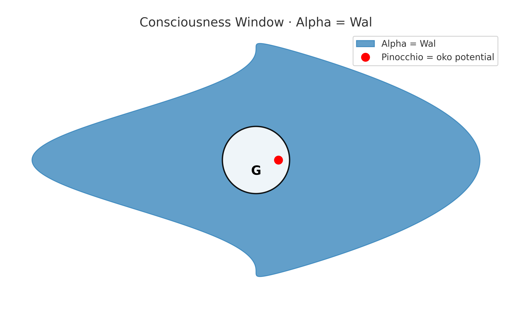
Unveränderte Bildreferenz. Maskenform, G und roter Punkt werden nicht ohne ihren Generator mit der Trinity-Linse oder den beiden 45°-Hilfsnodes identifiziert. Der Bildtitel ist keine wissenschaftliche Bewusstseinsaussage.
A0-BL-055 · SOURCE-BOUND RESULT DEMONSTRATOR
Drei Carrier. Dreimal Return. Nur einmal Economy.
Q106/O16, Typed Seam und Decimal D4 laufen durch dieselbe sichtbare Prüfgrammatik. Die Lanes bleiben getrennt; der Vergleich zeigt Rekonstruktion und Kosten, nicht Carrier-Identität.
Drei getrennte Quellen
Jede Lane beginnt bei ihrem eigenen Carrier. Gleiche Bedienung bedeutet keine gemeinsame Identität.
BL-024 · Q106 → O16 + RESIDUAL
RETURN · NO SAVINGQ106 / O16
SOURCEQ037
→VIEWO16:05
+RESIDUALrank 2 · 3 bit
→RETURNQ037
90 collisions · fibre 6/7
MATCHED SHUFFLE · same 7 bit · 100 assignments differ
RECORD
7 / 7
106/106 exact0 bit saving
BL-025 · 140 INCIDENCES → 106 ADDRESSES
RETURN + ECONOMYTyped Seam
SOURCEI073
→VIEWS055
+RESIDUALtyped member
→RETURNI073
34 address merges · typed classes
INVALID GLUE · 30 mixed levels · 106/140 return
MEAN
7.535714 / 8
140/140 exact0.464286 bit saving
BL-049 · TWO LOSSY DECIMAL VIEWS
RETURN · NO SAVINGDecimal D4
SOURCE1737
→VIEWδ₁ 737
+SECOND VIEWδ₂ 137
→RETURN1737
δ₁ fibre 9 · δ₂ fibre 10
MIDDLE SWAP · bijective · no compression
RECORD
14 / 14
9000/9000 exact0 bit saving
3 / 3exact Return
1 / 3positive Economy
2 / 3frozen threshold missed
MIXED RESULTReturn grammar passes · Economy generalization fails
Canonical BL-055 Labreport · A0 Experiment Learning Map · Source-bound specification
BOUNDARY · Der Demonstrator visualisiert geschlossene Ergebnisse. Er erzeugt keinen neuen Carrier, keine neue Study, keine universelle Kompression, keine physikalische Informationsaussage und keine Publikationsfreigabe.
TECHNIK & QUELLENIntegrationsstand, Crosswalk, Adapter und Herkunft öffnen
Integrationspaket 1–5 · Bench → echte Blue/Dodeca/Pink-Fläche → Return
Der native Engineering-Lauf ist gekoppelt: eine echte adressierte Fläche mit ausdrücklich gewählter Scharnierkante sowie vier ausgewählte Satellitenflächen laufen durch Quellenbefehl, Readback und Source-Return. Die gerenderte Human-Browserabnahme bleibt offen.
- Flächensteuerung — Engineering PASS: vorhandene Zell-/Flächen-IDs und native Geometrie bedienen; tatsächlichen Rendererzustand samt Starrheitswitness zurücklesen.
- Gemeinsame Sequenz — teilweise: 16 Buchstationen und 29 Anzeigeposen ausdrücklich zuordnen; jeder Quellschritt wird bestätigt, kein gleichgesetzter Träger.
- Achsen / Übergänge — teilweise: 2–O–5, 3–O–6 und 1–O–4; äußere Referenz, Knicklinie und AM/VM/PM-Lesart getrennt halten. M/Umlauf ist nicht automatisch LRRL.
- Record / Return — Engineering PASS: native Dodeca-Quelle, Befehlsnachweise, Fingerprint und exakter Source-Return sind im System-D-Record gebunden.
- Abnahme — offen: echte Browserkette, Fehlerfälle und deklarierter Source-Return; Engineering-PASS allein genügt nicht. Bekannte Binder-Abweichungen bleiben sichtbar.
Gemeinsamer Auftrag · Abhängigkeiten und Abnahmekriterien · Builder-Log · Paket 1–5 · Gemeinsamen aktuellen Stand exportieren · Native Blue/Dodeca/Pink-Quelle
LIFE03 ↔ A0-Master · vorhandene Scale-Engine, bestätigte Schritte und Source-Return
Quellabgeleitete LIFE03-Oberfläche auf der unveränderten LIFE02-Scale-Engine. Begrenztes Engineering-Profil: Blinker · 64×64 · höchstens 32 Generationen. Die lokale Quelluhr und ihre nativen Controls sind gesperrt; ausschließlich bestätigte Parent-Befehle verändern den Lauf. Keine Übernahme eines separat geöffneten Scale-Lab-Fensters.
Eine vorhandene Master-Uhr; pro Cue höchstens ein ausstehender Quellbefehl. Scrollen oder manuelle Parent-Bedienung pausiert die Demo. PENT- und LIFE03-Demoläufe werden ausdrücklich getrennt gestartet. Ein Pause ist kein erfolgreicher Return; spätes ACK darf keine pausierte Demo abschließen.
Einzelsteuerung · Quelle laden, lesen und zurückführen
Welche Zustände und Cues sind wirklich verbunden?
SOURCE: vollständigen Quellanker merken; OPERATOR/EDGE: je ein nativer Produktschritt; SHADOW: Observer-Ansicht; FAMILY: ein nativer Observer-Mikroschritt; GRID: Root-Projektion; RETURN: Quelle lesen; FOLD: Dual-Ansicht; ROOT: Produktschritt; RECORD: vollständiger deklarierter Source-Return. Dies sind Regie-Cues, keine Identität mit den gleichnamigen OCB-Trägern.
Der Anker enthält Mode und Speed sowie das vollständige native Work-Objekt: Pattern, Größe, Life-Session-ID, alle gespeicherten adressierten Frames, Ereignisklassifikation, E8-Mutationsindex, Mikro-/Makrotakt, Projektionsrecords und Joint-Return. Der Return stellt diesen deklarierten Zustand exakt wieder her. Adapterrevision und Auditverlauf laufen weiter; das ist kein physikalischer Zeitrücklauf.
Version/Quellhash, Fensterreferenz, Sitzung, Befehlsnummer und Revision werden geprüft. Fehlender oder widersprüchlicher Witness führt zu HOLD. View-ACK darf die Trajektorie nicht ändern, STEP-ACK muss Uhrfortschritt und Historienpräfix erhalten. Kein Retry eines unbestätigten STEP.
Bestätigter Zustand / Return-Receipt
Noch kein Source-Witness.
Abnahme: neue Engineering-Kopplung; Browser-/Pixeldarstellung und Owner-Erfolgsweg noch separat offen. Keine gemeinsame Scale-Fenster-Sitzung, Gesamtmaschinen- oder wissenschaftliche Abnahme. E8-Projektionsabstand und bestehende Negativresultate bleiben erhalten.
Unveränderte LIFE03-Quelle · Vorhandenes Scale Lab · Vertrag & Quellhashes · Engineering-Prüfung · Bestandsabgleich
Bestand → A0 · Was ist verbunden, was fehlt wirklich?
Fortsetzung nach diesem dokumentarischen Abgleich: Der enge LIFE03-Master-Anschluss ist jetzt implementiert; seine neue Browserabnahme bleibt offen. Die Vorher-Zahlen und Lückenbeschreibungen unten bewahren den Stand vor diesem Anschluss.
Vorhandene Instrumente weiterverwenden, nicht neu erfinden. Dieser gezielte Abgleich bindet 26 vorhandene Quellen und Anschlüsse aus den Owner-Beispielen zurück. Er ist kein neues Gesamtinventar. Navigator und Originalpakete bleiben die Quellenautorität.
Lesepfad ≠ gemeinsamer Code ≠ gemeinsamer Laufzustand. Die Adapter Suite liegt schon in A0; Scale → LIFE03 nutzt bereits dieselbe Life-Engine. Beides ist etwas anderes als ein bestätigter OCB-Steuervertrag. Der vorhandene Master–PENT-UI-PASS bleibt erhalten.
Vorhandene Adapter Suite · Vorhandenes Transition Observatory · Science Navigator / Atlas
Präzisierung der Suite: Der aktuelle Renderer berechnet deklarierte Punktformeln und exportiert projection_only: true. LIFE08 und Three-Domain tragen Zeitsemantik, werden hier aber nicht live aus ihren Quellläufen gelesen. Ein Source-Label allein ist kein State-Witness. Diese Lücke wird sichtbar gemacht, nicht durch einen neuen Namen geschlossen.
A0 · bestehende Anschlüsse · 2 Einträge
| Vorhandene Quelle | Implementierter Bestand | Ergebnis / Grenze | Konkrete Anschlusslücke |
|---|---|---|---|
| Axial Carrier Adapter Suite Quellrecord · ART:HTML:9F6E3FCB5D53 Vor Abgleich: 3 direkte A0-HTML-Einstiege. | Bereits im A0-Desk: sechs View-Adapter, gemeinsame Darstellung und JSON-Export. | Deklarierte Punktformeln; keine Live-Übernahme der sechs Quellzustände. Zeitsemantik bei LIFE08/Three-Domain ist keine gemeinsame Quelluhr. | Source-Records statt Darstellungspunkten; je Lane Readiness, State-Witness, Stop und Return binden. |
| Master ↔ PENT Quellrecord · vorhandener Quellenpfad Vor Abgleich: 10 direkte A0-HTML-Einstiege. | Owner-Browserlauf: 10/10 Cues, neun SETs, ein RETURN. | Begrenzter UI-PASS für sechs Felder, nicht sämtliche 106 Knoten oder die Gesamtmaschine. | Kein Neubau dieses UI-Anschlusses; umfassendere Verträge getrennt halten. |
LIFE · Instrumente und Hub · 12 Einträge
| Vorhandene Quelle | Implementierter Bestand | Ergebnis / Grenze | Konkrete Anschlusslücke |
|---|---|---|---|
| Transition & Identifiability Observatory Quellrecord · ART:HTML:5A99DF8EFC9C Vor Abgleich: 2 direkte A0-HTML-Einstiege. | Vorhandener Hub mit 11 Instrumentgruppen und typisierten Relationen. | Navigation und Ergebnislesung, keine gemeinsame Laufzeit. Bestehenden Hub wiederverwenden. | A0-Einstieg hier hergestellt; Quellgruppen nicht nochmals als Registry anlegen. |
| LIFE02 · Scale Lab Quellrecord · ART:HTML:2972691C8297 Vor Abgleich: 1 direkte A0-HTML-Einstiege. | B3/S23 auf 16–128er Trägern; RLE, History und sechs Ansichten. | Eigenständiger Lauf. Größere Spektren sind 16×16-Aggregate. | Expliziter Lauf-/Snapshot-Transfer zum gewünschten A0-Verbraucher fehlt. |
| LIFE03 · Life × E8 Workbench Quellrecord · ART:HTML:EBD57F76EA4F Vor Abgleich: 0 direkte A0-HTML-Einstiege. | Importiert die echte Scale-Engine; Produkttakt, Observer Word und Root Projection sind implementiert. | Eigene Life-Sitzung; kein Live-Zustand eines separat geöffneten Scale Labs. Projektion beweist keine Life–E8-Identität. | Keinen zweiten Life/E8-Kern bauen; Sitzung, Befehle, Witness und Return für A0 spezifizieren. |
| LIFE01 · P3 / GLB Quellrecord · ART:HTML:91AD95BEC351 Vor Abgleich: 0 direkte A0-HTML-Einstiege. | Vorhandene Raum-Zeit-Darstellung mit GLB-Export. | Darstellungsobjekt bleibt vom autoritativen Quelllauf getrennt. | GLB-/Run-Receipt an A0-Auswahl binden; Export ist kein synchronisierter Masterzustand. |
| LIFE04B · Antipodal Return Quellrecord · ART:HTML:9C1F6CA02076 Vor Abgleich: 2 direkte A0-HTML-Einstiege. | Exakter typisierter Return und kontrollierter E8-Spezifitätstest vorhanden. | NO E8 ANTIPODAL SPECIFICITY · FAIL 0/4. Exaktes Bookkeeping ändert diesen Befund nicht. | Ergebnis zugänglich halten; keine Wiederholung oder PASS-Promotion durch UI-Anbindung. |
| LIFE05A · Prime/N Transition Quellrecord · ART:HTML:4FB12A1B7133 Vor Abgleich: 0 direkte A0-HTML-Einstiege. | Endliche Primzahlsummen, Returns und Ordnungskontrollen. | Exakte Arithmetik vor einer Life-Kopplung; kein universeller Life-Code. | Lesepfad herstellen; jede spätere Ereigniszuordnung separat deklarieren. |
| LIFE05B · Event → Prime/N Quellrecord · ART:HTML:DE23103CD410 Vor Abgleich: 0 direkte A0-HTML-Einstiege. | Registrierter gepoolter Test: 4/4 Gates PASS. | PRIMARY PASS / FIXTURE LOCALIZED / NOT GENERAL; Glider trägt 186/243 Prime Returns. | Nicht als allgemeine Prime-Regel verdrahten; mit Holdout LIFE05D zusammen lesen. |
| LIFE05D · Cell Event Holdout Quellrecord · ART:HTML:2CF628A70156 Vor Abgleich: 0 direkte A0-HTML-Einstiege. | Zellgenaue Ereignistopologie und unabhängiger Holdout vorhanden. | MIXED / NON-IDENTIFIABLE; Prime-Vorteil nicht repliziert, 3/4 Gates. | Ereignis-IDs, native Adresse und View-Adresse getrennt anbinden. |
| LIFE06 · Transition Alphabet Quellrecord · ART:HTML:3683F105DE7A Vor Abgleich: 0 direkte A0-HTML-Einstiege. | 00/01/11/10 als zeitlich abgeleitete Ereignissprache. | Exaktes deskriptives Instrument; kein Wechsel zu einer Drei-Zustands-Regel. | Ereignisrecord statt Symbolfarbe als mögliche A0-Schnittstelle festhalten. |
| LIFE06B · Euler / Fibonacci Rail Quellrecord · ART:HTML:DB7656F2E81A Vor Abgleich: 2 direkte A0-HTML-Einstiege. | Primfenster, Euler-Höhen und Fibonacci-Ansicht implementiert. | Beobachtungskoordinaten ändern die Life-Regel nicht. | Ansichtsparameter von Carrier-/Ereigniszustand trennen; LIFE06C mitführen. |
| LIFE06C · Prime/Composite Benchmark Quellrecord · ART:HTML:D9D3FD2D23BF Vor Abgleich: 0 direkte A0-HTML-Einstiege. | Registrierter Holdout des Primfenster-Vorteils vorhanden. | NO PRIME WINDOW RECURRENCE ADVANTAGE ON HOLDOUT · 1/5 Gates. | Negativresultat bleibt am Rail-Lesepfad sichtbar; kein neuer Run. |
| LIFE06D · P/Q/B Audit Quellrecord · ART:HTML:ABF118EAE77B Vor Abgleich: 1 direkte A0-HTML-Einstiege. | Q−=P/α, Q+=Pα; Produkt P², Rundungsrest und Beobachtungsfiber. | B ist der gebundene Pearl-Vergleichsrecord, nicht automatisch β. Bedingte Identifizierbarkeit; LIFE06C bleibt negativ. | Parameter, Integeransicht und Toleranzfiber bei einer späteren Kopplung getrennt führen. |
CA-IDENT · vorhandene Testkette · 10 Einträge
| Vorhandene Quelle | Implementierter Bestand | Ergebnis / Grenze | Konkrete Anschlusslücke |
|---|---|---|---|
| CA-IDENT-01 · Multi-View Quellrecord · ART:HTML:D5EB37391C26 Vor Abgleich: 2 direkte A0-HTML-Einstiege. | Life, Grid, Fourier, Shadow Memory, Shadow-gons und E8-Adapter vorhanden. | LIMITED_VIEW_SIGNAL; E8-Adapter und kombinierter Raum liefern keinen Nutzenbeleg. | Als bestehendes Instrument anbinden; nicht aus Formähnlichkeit rekonstruieren. |
| CA-IDENT-02 · Utility Gate Quellrecord · ART:HTML:4AA4B0325513 Vor Abgleich: 0 direkte A0-HTML-Einstiege. | Größerer Rule-/Seed-Holdout; Fourier und Memory tragen Teilsignal. | PARTIAL SIGNAL / GATE FAIL; keine Promotion der kombinierten Pipeline. | Die Ergebnisse der einzelnen Linsen bei einer A0-Zusammenstellung beibehalten. |
| CA-IDENT-03 · Cube / Fourier / Memory Quellrecord · ART:HTML:ADAE8E92E961 Vor Abgleich: 0 direkte A0-HTML-Einstiege. | Komplexer Fourier-Return PASS; Cube-Face- und CRT-Anschluss dokumentiert. | FUSION NO GAIN; exakte Inversion ist kein Vorhersagegewinn. Magnitude verliert Adresse. | Return und Utility getrennt anbinden; CRT-Sidecar bleibt außerhalb des gesperrten Utility-Tests. |
| CA-IDENT-04 · Balanced Fusion Quellrecord · ART:HTML:86BED2506E9E Vor Abgleich: 0 direkte A0-HTML-Einstiege. | Korrigierte Balance und unabhängiger Split bereits getestet. | BALANCED FUSION NO GAIN; Rare-Class-Support ist begrenzt. | Keine erneute Balance-Reparatur als ungetestete Lösung ausgeben. |
| CA-IDENT-05 · P=A+B / 63:1 Quellrecord · ART:HTML:7B0AE7E44451 Vor Abgleich: 1 direkte A0-HTML-Einstiege. | 63/64 Fourier + 1/64 Memory als normierte Distanzmischung tatsächlich getestet. | ALPHA-BETA NO GAIN; exakte Normierung, aber diese Rollenrichtung nicht gestützt. Kein allgemeines Urteil über symbolische Namen. | Arithmetik, konkrete Metrik und historische β-Darstellung nicht gleichsetzen. |
| CA-IDENT-06 · Kappa / Abstention Quellrecord · ART:HTML:44337F402C8B Vor Abgleich: 1 direkte A0-HTML-Einstiege. | Abstention aus Abstand zu eingefrorenem bekanntem Support. | COVERAGE GATE FAIL / UNKNOWN RESULT; kein unbekanntes Zielereignis im Holdout. | UNKNOWN unverändert führen, nicht als erfolgreichen Detektor anzeigen. |
| CA-IDENT-07 · Generational Binder Quellrecord · ART:HTML:538786C76550 Vor Abgleich: 0 direkte A0-HTML-Einstiege. | Vier Zeitschnitte, signierte erste und zweite Differenzen; C-Taxonomie vorhanden. | COVERAGE GATE FAIL / PRIMARY RESULT UNKNOWN; beschreibende Scores kein negativer Primärentscheid. | C_obj, C_cmp und Beobachtungsklassen getrennt führen; CA08 daneben lesen. |
| CA-IDENT-08 · Conditional History Quellrecord · ART:HTML:237A127F1B20 Vor Abgleich: 0 direkte A0-HTML-Einstiege. | 3.600 frische Records; History-Gewinn +0,0488 Macro-F1; endlicher Auflösungsaudit 7→5→2→1. | PRIMARY GAIN PASS / GATE SPECIFICITY FAIL / RESOLUTION AUDIT PASS. Kein universelles Beobachtergesetz. | Gewinn, Gate-Spezifität und Auflösungszahl als getrennte Felder erhalten. |
| CA-IDENT-09 · View-Topology Calibration Quellrecord · vorhandener Quellenpfad Vor Abgleich: 0 direkte A0-HTML-Einstiege. | 3.000 Integer-Identitäten; 9.000 exakte Returns, fünf Gates PASS. | CALIBRATION_PASS_VIEW_NONINVARIANT: Identität bleibt, Nachbarschaft wechselt mit dem Cut. | Als vorhandene Kontrollmethode nutzen; keine Prime/Life-Mechanismusidentität. |
| CA-IDENT-10 · Three-Cut Event Transfer Quellrecord · vorhandener Quellenpfad Vor Abgleich: 0 direkte A0-HTML-Einstiege. | 14.132 LIFE05D-Ereignisse; 42.396 exakte inverse Returns, sechs Gates PASS. | TRANSFER_PASS_VIEW_NONINVARIANT für einen eingefrorenen Lauf; View-Topologie bleibt lokal. | Persistente Event-ID und native Adresse sind der konkrete vorhandene Anschlussansatz. |
IEEE300 · getrennte Ergebnisse · 2 Einträge
| Vorhandene Quelle | Implementierter Bestand | Ergebnis / Grenze | Konkrete Anschlusslücke |
|---|---|---|---|
| IEEE300 · R2 Graph-to-Grid Quellrecord · ART:IEEE300:GRAPH_GRID:R2 Vor Abgleich: 3 direkte A0-HTML-Einstiege. | Realer AC-Load-Flow, relationale Abbildung und registrierte Kontrollen. | R2 GRAPH GRID CONTRACT PASS; nur der deklarierte Repräsentationsvertrag. | R2-Records statt synthetischer Zylinderpunkte übernehmen; keine Solverkopplung behaupten. |
| IEEE300 · Morphology 01 Quellrecord · ART:IEEE300:GRAPH_GRID:MORPHOLOGY01 Vor Abgleich: 1 direkte A0-HTML-Einstiege. | Vier Ansichten und zwei Solverpolitiken; Relabeling und Ablation geprüft. | VALID MIXED-NEGATIVE: CROSS_VIEW_ORDER_NOT_PRESERVED; H3/Circle ohne spezifischen Vorteil. | Mit R2 gemeinsam zugänglich, aber Ergebnisstatus nicht mit dessen PASS verschmelzen. |
Die Einstiegszahl zählt direkte href-Links der A0-Haupt-HTMLs vor diesem Bau, keine indirekten Navigator-Wege, geteilten Menüs oder Textnennungen. Null heißt nicht „Quelle fehlte“. Heutige Quellhashes und vorhandene Artifact-IDs werden getrennt vom historischen Registry-Assessment geführt; keine automatische Admission.
Was bei P=A+B, P/Q/B und β getrennt bleibt
63/64 + 1/64 = 1 ist vollständig normiert. CA-IDENT-05 prüfte eine konkrete Fourier-/Memory-Distanzmischung und stützte deren vorgeschlagene Rollenrichtung nicht. LIFE06D behandelt dagegen reelle Skalenkonjugierte; sein B ist ein gebundener Vergleichsrecord. Der historische β-Splitter ist nicht allein durch den Buchstaben mit einem dieser Verträge identifiziert. Symbolische Namen bleiben erhalten, ohne ungeprüfte Parametergleichsetzung.
LIFE03-Laufzeitanschluss: Der vorhandene State-/Befehls-/Return-Adapter ist implementiert und technisch geprüft; die Browserabnahme bleibt offen. Quelltimer, Readiness, Startanker und Stop/HOLD sind im bestehenden Adaptervertrag getrennt festgehalten. Keine neue Forschung und keine automatische Fusion der Ergebnisse.
Abgleich, Quellhashes und Vorher-Einstiege · JSON · Engineering-Prüfung · Builder-Return · Eintrag 16
PENT ↔ Master · Zustand, Operatoren und überprüfbarer UI-Return
Owner-bedienter Ein-Klick-Lauf: 10/10 Cues, neun bestätigte SETs und ein RETURN; Revision 10 → 20. Alle sechs UI-Felder samt Control-Readback kehren exakt zum Start dieses Laufs zurück. Erfolgsanzeige im Screenshot 14:50:25 und exportierter Trace wurden geprüft. Dies ist ein gespeicherter Testnachweis, nicht der Status eines neu gestarteten Laufs.
Prüfbericht · PASS · Geprüfter Browser-Export · Nachprüfbarer Verifier · Verifier-Gegenproben · 717 Engineering-Prüfungen
Begrenzte UI-Funktionsabnahme. Keine Gesamtmaschinen-, vollständige 106-Knoten-, wissenschaftliche oder umfassende Pixel-/Browser-Kompatibilitätsabnahme. LIFE04B-Spezifität bleibt FAIL 0/4.Gesamtverschaltung offen · Was läuft bereits zusammen?
| Teil | Verbindung heute | Was noch fehlt |
|---|---|---|
| Master ↔ PENT-Explorer | Browser-PASS: Cues, bestätigter Readback, sechs UI-Felder, frischer Return. | Vollständige 106-Knoten-Adresse ist nicht Teil dieses Vertrags. |
| OCB-Instrumente / Q4 / Root7 | Bestehende Master-Regie und getrennte lokale Adapter; Root7 ist eine Q4-gebundene Ansicht. | Ein gemeinsamer bestätigter End-to-End-Trace und Return über alle Teilzustände ist nicht abgenommen. Zehn Regiephasen sind keine gemeinsame Simulation. |
| Schichtenphase → Resonator / Euler | Neuer lokaler Phasenpfad mit echtem Schichten-Readback, abgeleiteten Ansichten und begrenztem Startanker-Return. Bedienen ↓ | Browserabnahme offen; keine Steuerung der ursprünglichen Resonator-HTML-Laufzeit und kein Gesamtmaschinen-Return. |
| Pascal-/Grid-Quellseiten → Sewing | Vorhandene lesende Snapshot-Brücke. | Kein allgemeiner schreibender Maschinenbus oder gemeinsamer Steuervertrag. |
| Living Blueprint / NEON / Blue Body | Quelllinks, Crosswalks und eigene lokale Werkzeuge. Die Träger bleiben verschieden. | Explizite Adapter für gemeinsam zu steuernde Parameter, Rückmeldungen und Return. Verlinkung und ähnliche Bilder reichen nicht. |
| Core-Dynamik: Lorenz, Rössler, Kuramoto usw. | Forschungsbestand und Lesepfade; keine Anbindung an diesen PENT-Lauf. | Je gewähltem Fall reproduzierbarer Quellrecord, Parameter, Ein-/Ausgaben und begründeter Vergleichsvertrag; keine neuen Forschungsruns durch die Demo. |
| Fourier / JT / VIII und weitere Ketten | Bis zur eigenen Quellen- und Vertragsprüfung deaktiviert. | Erst prüfen, dann einzeln anbinden; kein stilles Einschalten durch diesen PASS. |
Nächster sinnvoller Bau: einen konkreten Gesamtpfad auswählen und für jeden beteiligten Adapter Zustand, erlaubte Befehle, Readiness, Stop/HOLD und Return festlegen. Danach denselben Start/Pause-Takt nutzen und den gesamten Pfad mit Gegenproben abnehmen. Erst dann darf dieser Pfad „gemeinsam verschaltet“ heißen.
Separat offen: genauere Pausenursache und weniger empfindliche Beobachtungsbedienung; bekannte Binder-/Mission-Control-Hash-Abweichungen. Diese Verwaltungspunkte ändern weder den begrenzten UI-PASS noch bestehende wissenschaftliche FAIL-/Negativresultate. Regenbogen / Scarabaeus / CIKADA / Titan · Anschlusskarte ↓
Abfolge: SOURCE → OPERATOR → EDGE → SHADOW → FAMILY → GRID → RETURN → FOLD → ROOT → RECORD
Der Explorer bleibt hier sichtbar. Manuelles Bedienen oder Scrollen pausiert den Lauf. Ein neuer Start beginnt bei SOURCE; ein älterer Return zählt nicht als Nachweis dieses Laufs.Die Laufzeitfassung übernimmt die authored Explorer-Ansichten aus dem hashgebundenen Core-Snapshot. Dazu kommt eine eigene schmale Schnittstelle. Original und Ergebnisrecords bleiben unverändert. PENT-04-Lift, PENT-07-Hub und D30 sind verschiedene Operationen.
Einzelsteuerung & Verbindung · erweitert
. Die sichtbare Cue-Liste ordnet Ansichten zu; sie identifiziert PENT nicht mit CRT, Schatten, Grid oder Q4. Es gibt keine zweite Demo-Uhr. Eine fehlende oder widersprüchliche Rückmeldung stoppt die PENT-Folge und pausiert den Master.
Master-Cues und Return-Grenze
SOURCE: Structure / Identität und UI-Anker; OPERATOR: Strukturspiegel; EDGE: D30-Register +1; SHADOW: 3D lift; FAMILY: Roots; GRID: 5/6 cycles; RETURN: Boundary-Lesung; FOLD: Dreiecksmasken; ROOT: D30 mit Wort LRRL; RECORD: exakter UI-Return zum Startanker. Das sind deklarierte Regie-Cues, keine mathematischen Carrier-Abbildungen.
Geprüft werden sechs UI-Felder plus ihre gerenderten Bedienelemente: mode, op, growthStep, couplingView, dRegister, branchWord. Der vollständige 106-Knoten-Zustand ist damit nicht adressiert. Revision und Geschichte laufen weiter. Weder Pixelrendering noch wissenschaftliche Resultate werden über die Nachrichtenschnittstelle attestiert.
Letzter Source-Witness / Return-Receipt
Noch kein bestätigter Quellrecord.
Unverändertes Quellinstrument ↗ · Original-Receipt · Adaptervertrag & Quellhashes · Anschlusskarte · Forschungsbuch
Regenbogen · Scarabaeus · CIKADA · Titan — Bestand und fehlende Anschlüsse
Vier Rollen, keine vier neu erfundenen Module. Die vom Owner gelieferte Architekturtafel trennt Transport, Reorganisation und Stabilisierung. Der Regenbogen ist eine vorhandene Erscheinungsansicht. Diese Karte bindet Bilder, Werkzeuge und Ergebnisse zurück an ihre Quellen; sie verbindet noch keine Controller.
Bildgrammatik: Scarabaeus / Transport → CIKADA / Reorganisation → Titan / Stabilisierung. Regenbogen: Ansicht auf Erscheinung und Beobachterrelation. Die Pfeile sind eine Lesereihenfolge, keine ausgeführte Maschinenpipeline.
Regenbogen / Purple Rain
Rolle: Erscheinungs- und Beobachteransicht.
Gebaut: Prisma, drei Darstellungen, Newton-/Goethe-/Leibniz-Fragen, Farbrad und Purple Rain; eigener lokaler View-Record. Über die Aperture Journey bereits navigierbar.
Offen: kein bestätigter Master-Steueradapter. Für eine Kopplung müssen gemeinsam zu steuernde Felder, eigene Animation, Stop und Return ausdrücklich vereinbart werden.
Vorhandene Ansicht öffnen · Vorhandene Tests · Aperture-Einstieg
Scarabaeus
Rolle auf der Tafel: Transport durch Struktur.
Vorhanden: historische Scarab-/Crown-Bildfamilien und korrigierter Totient-/Operator-Spine-Quellenaudit. Der Audit prüft Arithmetik und Provenienz, nicht einen universellen Transportoperator.
Offen: Träger, Quell-/Zieladresse, Transportregel und mitzuführender Rest sind für diese Rolle am Master nicht definiert. Bestehender Thread Loom, Janus und Scarab sind nicht automatisch identisch.
CIKADA
Rolle auf der Tafel: Reorganisation / Strukturwechsel.
Mehr als Bildmaterial: abgeschlossener Mandelbrot-Operator-Return-Test: Parameter-Return begrenzt etabliert, Raster-Return winkelabhängig und verlustbehaftet; alle nichttrivialen Cross-Space-Versuche scheitern. Ein separater synthetischer Kronentest kommt innerhalb seiner geprüften Familie zu C_STRUCTURED_GEOMETRY_REQUIRED.
Getrennter Status: der spätere Marker-Corpus bleibt HOLD_CONFLICTING_DEFINITIONS / NO_CANDIDATE_ADMITTED. Dieser Intake überschreibt nicht die abgeschlossenen Tests; jene Tests validieren nicht sämtliche CIKADA-Behauptungen.
Offen: Zuordnung der Reorganisationsrolle zu genau einem Quellvertrag und Master-Adapter. Die ORION-Platzierungsprüfung benennt nur einen externen Fixture-Kandidaten mit separatem Implementierungsgate.
Operator-Return · Entscheidung · Kronengeometrie · Entscheidung · Marker-Intake · HOLD · Platzierung · Gate offen
Titan
Rolle auf der Tafel: Stabilisierung der neuen Struktur.
Vorhanden: die dokumentierte Rollenidee. Damit ist noch kein allgemeiner Stabilisierungsalgorithmus bezeichnet. Gleichnamige TITAN-Inventare oder Kontrollfälle werden hier nicht als Implementierung dieser Rolle ausgegeben.
Offen: Was soll stabil bleiben? Welche Messgröße, Toleranz, Regel und Gegenprobe entscheiden PASS oder HOLD? Erst danach kann ein vorhandener geeigneter Regler zugeordnet werden.
Crown, Regenbogen und Frequenztafeln richtig auseinanderhalten
Die Scarab-Crown-/Nested-Polyhedral-Field-Tafel beschreibt eine verschachtelte Architektur mit Region → Apertur → Region. Sie illustriert eine Verbindung zu Lorenz, Mandelbrot und CIKADA/Regenbogen; damit sind deren Träger und Operatoren nicht identifiziert. Auch der synthetische Kronentest identifiziert keine historische Bildherkunft.
Die Polar-Janus-/420-Wheel-/Solfeggio-Tafeln sind als Owner-Bildquellen erfasst. Frequenzlabels, ±43, 682 und P=R/T sind nicht als Treiber oder validiertes Naturgesetz angeschlossen; insbesondere bleibt ein Quotient bei T=0 ohne zusätzliche Definition offen. Die Karte führt keinen dieser historischen Tests erneut aus.
Nächster begrenzter Anschluss: zuerst einen vorhandenen Fall und seine tatsächlichen Ein-/Ausgaben auswählen, dann einen Adapter spezifizieren und denselben bestätigten Start/Pause/Return-Vertrag prüfen. Nicht die vier Rollen durch vier gleichnamige Knöpfe ersetzen.
Quellen, Rollen und Grenzen · JSON · Karten-, Link- und Quellhash-Prüfung · Bereits bestätigter Master–PENT-Lauf ↑
Integrationspaket · Konzept → Kontaktstrecke → Instrument → Return
Die Owner-Tafeln sind konzeptuelle Lesefenster, keine neuen Quellmodelle oder historischen Physiknachweise. Anklicken öffnet die vollständige Tafel; der Instrumentlink führt zu einer vorhandenen, getrennt definierten Umsetzung.

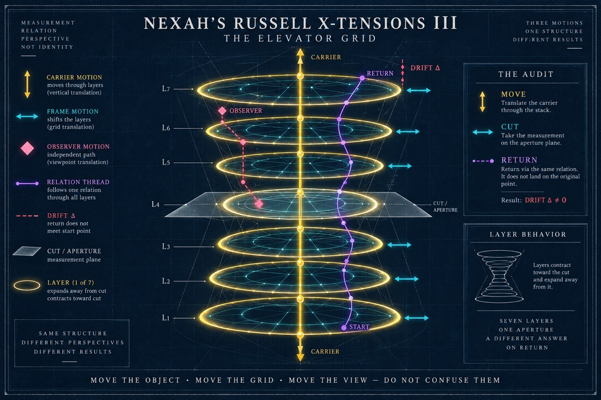
1 · Schichten / Matroschka
Träger, Raster und Beobachter unterscheiden.
Schichten-Instrument ↓
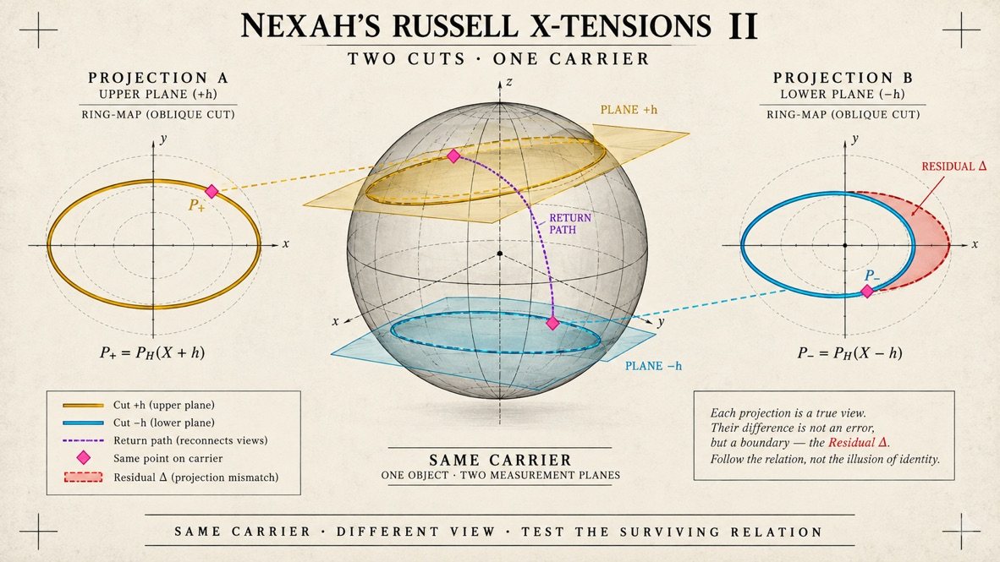
2 · Zwei Schnitte / Linse
Gleiche Quelle, begrenzte Ansichten.
Vorhandene Vergleichslinsen ↓
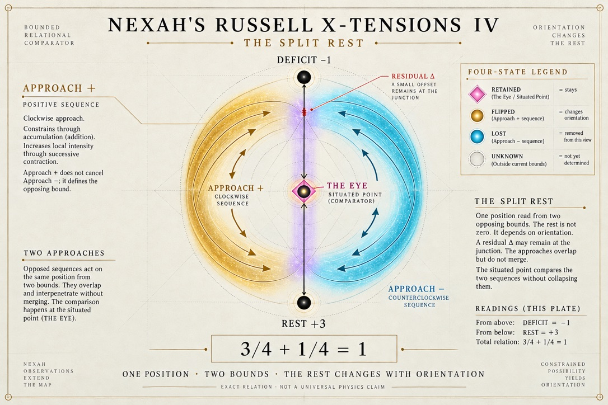
3 · Doppelhälfte / Rest
Die Richtungen bleiben getrennt.
Herkunft und Mehrdeutigkeit ↓
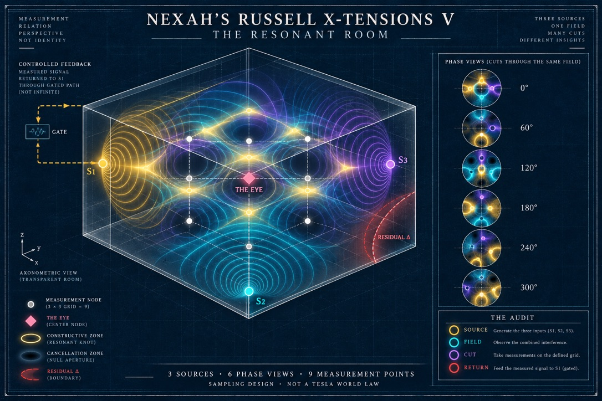
4 · Raum / Cube
Quellen und Messpunkte deklarieren.
Vorhandenes Body-Lab →
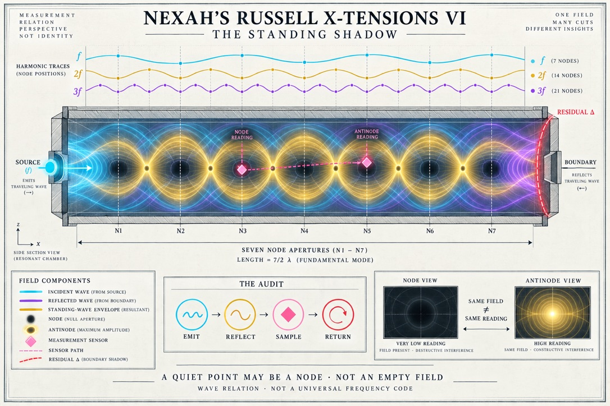
5 · Schlauch / Überlagerung
Knotenlesung ist nicht das ganze Feld.
Getrenntes Return-Instrument →
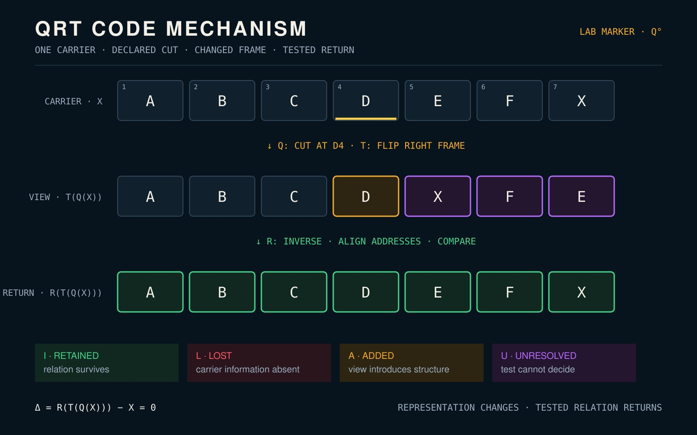
6 · QRT / aufgeschlüsselte Folge
Schnitt, inverse Abbildung, Adressvergleich.
Vorhandene QRT-Verträge →Arbeitsweg: Phasenpfad bedienen ↓ · Bestand und offene Gesamtanschlüsse ↑ · Paketvertrag / Quellbindungen · Export-Verifier · begrenzter Ansichts-Return
- Implementiert, Browserabnahme offen: Schichtenphase → abgeleiteter Resonator/Euler → lokaler Readback/Return.
- Vorhanden: Master–PENT mit begrenztem Browser-PASS; LIFE03-Adapter mit eigener offener Browserabnahme. Keine erneute Erfindung dieser Anschlüsse.
- Offen: native Blue/Pink-Einzelfläche; Ihara-Graphabbildung; gemeinsame Format-/Grid-Übergabe einschließlich Adresse für „537 GG“; weitergehender Gesamtmaschinen-Return.
- Darstellungsfehler separat offen: zweiter Herkunftspunkt der Mod-11-Kollision im bestehenden 11-Space-Instrument.
EXTERNAL ADAPTERS · PACK A+BVier vorhandene HTML-Instrumente verbinden, bewegen und lokal zurückführen
Die Bench liest vier bestehende Quellverträge über dieselbe Bediengrammatik. Jeder Adapter besitzt einen eigenen Anker, eigenen Schrittzähler und eigenen Return. Es gibt keine gemeinsame Quelluhr und keinen Gesamtmaschinen-Return.
0/4 CONNECTED
Paket A · Joint Application + Axial Carrier
FROZEN PROTOCOL READER · 10 CASES
DISCONNECTEDJoint Application / JARP
SEQ 00NO RETURN RECEIPT
PROJECTION-ONLY RECORD · 6 LANES
DISCONNECTEDAxial Carrier Suite
SEQ 00NO RETURN RECEIPT
Paket B · Fold / Boundary Connector
8→7 + RESIDUAL →8 · 8 PHASES
DISCONNECTEDAXIS08 Fold / Return
SEQ 00NO RETURN RECEIPT
AREA → BOUNDARY → GRAPH → PASCAL
DISCONNECTEDBoundary Graph
SEQ 00NO RETURN RECEIPT
Grenze: JARP bleibt ein eingefrorener Engineering-Protocol-Reader. Axial Carrier bleibt projection_only. AXIS08 attestiert nur den exakten Quotient-plus-Residual-Return. Boundary Graph verbindet Darstellungen, nicht Strukturen oder physikalische Mechanismen.
ACTIVE SOURCE / CARRIER
A0.CRT.CHANNEL/5x73
MASTER DEMONSTRATOR AUTO TOUR READY
One bench · typed handoffs · one visible run
Prime address and carrier enter the bench. Every later carrier change is declared as a typed handoff.
Eigene Eingaben pausieren die Vorführung. Der große Knopf startet oder pausiert ausdrücklich den automatischen Ablauf; STEP bleibt manuell.
TYPED HANDOFF / RUN RECORD
STATE_RECORD
READY · no transition committedBOUNDARY · carriers remain distinct
Zwei Anschlüsse. Ein sichtbarer Schnitt.
Vorhandener Numbers-Mischer oben, vorhandener Bench-Aperture-Stack unten. „1“ markiert je einen Anschluss; das Komma bezeichnet die deklarierte Trennung. Club und Relations Player sind die vorgeschlagenen Zielräume — ihre Live-Records sind hier noch nicht gekoppelt.
Oben · Numbers-Mischer → Zielraum Club
1
Aperturen / deklarierter Schnitt,kein gemeinsamer Operator
Unten · Bench-Stack → Zielraum Relations Player
1
Aperture Plates ↔ Glyph Trace
Im NSN-Lineage-Binder dokumentarisch erfasst. Die zwei Bildspalten sind erhalten; ihre Zuordnung zueinander ist weiterhin offen.
Links · 5 Plate-Labels + RETURN
- EP
- SI
- LP
- SH
- RT
- RETURN
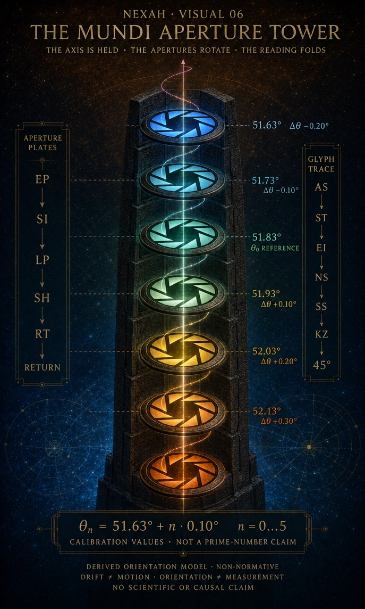
Rechts · 7 Glyph-Einträge
- AS
- ST
- EI
- NS
- SS
- KZ
- 45°
Deine Lesart: Der orangefarbene Return-Teller könnte das Residuum auffangen. Der Legendenrecord enthält dafür noch keine Zuordnung oder Transportregel. Residuum im Teller: nicht bestimmt — nicht 0.
n=0…5 bezeichnet hier nur die sechs vorhandenen Adapterpositionen P1…P6. Weder Plate-Labels noch Glyphen werden automatisch daran gebunden. Ein Ansichts-Flip liefert ebenfalls noch keine Spaltenzuordnung.
Bestehende Bindung & Test-Rückwege
Unveränderter Legendenrecord · Dokumentarischer Return · NSN-Lineage-Binder · Mathfield-Quellenvergleich.
Orion/POLAR · Janus Grid Fold Test 07 ist ein bestehender separater Test-Rückweg der Bench. Er wird hier nicht als Beleg für Tower-Spaltenmapping oder Residuum-Transport übernommen.
Bildhash: f2daab64d60462d01bd8023d56562b4c8d3f4fa871c13ae5897d409fa4eed66b. row_correspondence = null · label_expansions = null. Neue Auffangstellen-Lesart separat vom unveränderten Quellrecord.
Live-Adresse & eigener Anker
EMPFANG
AKTUELLER PLAYER
| Feld | Eigener Anker | Aktuell | Vergleich |
|---|
Nächster Schritt: Verbindung herstellen.
Q4 → Pascal · Grid / Bügel
Explizite Engineering-Regel: die vier angezeigten Q4-Bits werden von links nach rechts als Pascal-Entscheidungen gelesen, einschließlich führender Nullen. Live-Follow liest nur neue bestätigte Receipts; „Übernehmen“ beendet Follow und hält eine Einzelaufnahme. Bei fehlender Quelle bleibt Live-Follow HOLD. Grid/Bügel verändern nur die Darstellung. Der Return prüft nur die vier Bits; Platte, Lage und Desk bleiben als Quellen-Witness separat, nicht aus dem Pfad rekonstruiert. Keine Player-Steuerung oder Aperture-Stack-Zuordnung.
Übernommener Quellenrecord & Pascal-Return
Weiterhin offen · Player ↔ Aperture-Stack-Vertrag
HOLD · Anschlüsse werden gelesen
Hier stehen die aktuellen Endpunkte nebeneinander, nicht eine bewiesene Zuordnung. Der Player hat 48 Q4/Lage-Adressen; der Bench-Stack liest 48 Samples einer M3-Kurve durch sechs Platten. Gleiche Anzahl begründet keinen gemeinsamen Träger oder Operator. Die vorhandene Tower-Legende definiert ebenfalls kein Zeilenmapping.
Gelesene Quellen und Aussagegrenze. Für eine prüfbare Verbindung fehlen noch ein source-owned Schnitt/Operator, ein erwartetes Ergebnis und eine Gegenprobe. Ein UI-Auswahlpaar oder gespeicherte eigene Anker ersetzen diesen Vertrag nicht.
Kurztest direkt hier · Empfang → Anker → Änderung
- Im Q4-Feld des Clubs eine Position in Q4−, Q4⁰ oder Q4+ wählen. Hier müssen eine Lage und ein Deskindex erscheinen.
- Im Player pausieren. Hier „Getrennte Anker erfassen“ wählen: Player gegen eigenen Anker sollte MATCH zeigen.
- Im Q4-Feld des Clubs eine andere Position wählen: Player sollte CHANGED zeigen. Die unveränderte Bench darf gleichzeitig MATCH zeigen.
CONNECTED bestätigt den Empfang eines gültigen Records. HOLD_OPEN_LAYER bedeutet: Empfang vorhanden, Lage noch offen. CHANGED ist eine erkannte Abweichung, kein Transportfehler. Die Hinweise beschreiben den aktuellen Zustand; sie bescheinigen keinen vollständig durchlaufenen Test. Player-Bedienung bleibt im Club, dieser Monitor sendet keine Steuerbefehle.
Verbindung, Quelle & Aussagegrenzen
Im laufenden Club „Bench-Monitor im Club öffnen“ wählen. Der eingebettete Monitor ist an genau diese Club-Instanz gebunden; ohne Verbindungsauftrag bleibt HOLD. Bei Bedarf wird das vorhandene Deck geladen, aber nicht abgespielt. Alte separate Bench-Tabs bei „keine Club-Verbindung“ schließen.
Übertragen werden nur Platte, Q4-Adresse, vier Bits, Lage, Deskindex und UI-Spielstatus. Quelle, konkretes Fenster, Sitzungskennung, Reihenfolge und Koordinatenkonsistenz werden geprüft. Offene Lage bleibt HOLD. Der Club fordert auf Leseanfrage einen frischen Receipt aus dem vorhandenen Player an. Die Tabelle vergleicht ausschließlich die Player-Koordinate, nicht den UI-Spielstatus. „— / OFFEN“ ist kein bestätigter Gleichstand.
Die wiederholte Leseprüfung ist ein Verbindungs-Watchdog, keine Abspieluhr: Sie verändert keine Adresse oder Modellgeneration. Bei Timeout, Trennung oder verborgenem Monitor HOLD; danach ausdrücklich neu lesen. Der Anschluss sendet niemals Play, Pause, Select oder Reset. Der bestehende Club kann beim Verbergen seines Dokuments weiterhin seine eigene Sicherheitspause auslösen.
Player und Bench sind verschiedene Träger. Jeder wird nur mit seinem eigenen gespeicherten Anker verglichen; die Erfassung ist kein simultaner gemeinsamer Zustand. Kein gemeinsames Residuum oder Inverses, keine Fernsteuerung und kein Gesamtmaschinen-PASS. Der lokale Mischer-Vergleich oben bleibt separat.
Lesender Quellenrecord & Vergleichsledger
Quellen, Einheiten & Prüfgrenze
Original Game of Numbers · Bench-Aperture-Stack · Tower-Legende · Control Room. Dieser lokale Numbers-Lauf verwendet das unveränderte Modell und die vorhandene Mischer-Geometrie; er liest keine andere geöffnete Browser-Instanz und startet keine Uhr.
Angle-Gate: EP 7°, LP 33°, SI 45° sind deklarierte Winkelparameter. Die sechs Tower-Winkel 51,63°…52,13° sind eine andere Fixture. Single 7″ / 45 im Player bedeutet Format / UI-Tempo. Diese Größen werden nicht ineinander umgerechnet; die zeilenweise Tower-Zuordnung bleibt offen.
Verbinden hält beide Records als getrennte Anker fest. Vergleich prüft ihre vollständigen gespeicherten Felder. Ändert sich der laufende Bench-Stack, bleibt CHANGED sichtbar. „Zurück“ setzt ausschließlich den lokalen gespeicherten Numbers-Cursor zurück: kein berechneter inverser Operator, keine Rückstellung der Bench. VIEW CLOSED prüft die Darstellungsgeometrie, nicht die Identität vollständiger Records. Ein fehlender Quellenvertrag bleibt HOLD, auch bei zwei lokalen MATCH-Werten. Keine neue Family, keine physikalische Kopplung, keine NSN-Adoption.
Game · vorhandener 3×3-Atlas mit Live-Contract-Monitor ↗ · Der Monitor liest seine eigene Game-Instanz; dieser Link verbindet keine Uhren oder Quellenfenster.
1 | 1 · I/J-Cross · pink 2 · PENT-Quellenbezug ↓
OCB-GAP-06 + NATIVE FACE BRIDGE · FOUR SYSTEMS + ONE TYPED BINDER
One session. Four carriers. No silent merge.
M3/Aperture Stack, PENT, LIFE03 und die native Blue/Pink/Dodeca-Quelle werden über source-owned Adapter koordiniert. Der Binder speichert Zustände, Hand-offs und Returns; er behauptet weder gemeinsamen Träger noch gemeinsame Uhr. Zum 1,1-Test · Numbers-Mischer / Aperture-Stack ↑
SESSION / MASTER PHASE
Binder · Was ist gekoppelt, was läuft?
Vorhandene Verträge werden beim Laden aktiviert und folgen ihren Quellen über Änderungsmeldungen. Keine zusätzliche Abspieluhr und kein automatisches „Play all“. Einzelne Follow-Regler bleiben abschaltbar.
M3 → Stack
Quelle und Plattenregler ↗Player → Pascal
Receipt und Follow-Regler ↗Ihara → Visual 1
C/D und Edge-Quelle ↗Player-Receipts müssen an genau diese Bench-Instanz gebunden sein; ohne Club-Verbindung bleibt dieser Kanal HOLD. Die Übersicht erscheint auch im eingebetteten Club-Monitor. Gehaltene Aufnahmen sind nicht live; ein Bits-Return ist kein ganzer Player-Return. Die vier ursprünglichen Systeme und ihre bestehenden Session-Regler unten bleiben separat.
Gelesene Anschlusszustände / Grenzen
P×A / 48 ordered samplesnot connected
six-field UI state / rendered readbacknot connected
64×64 blinker / Life + E8 recordnot connected
4 addressed faces / hinge readback / returnnot connected
· Nach PLAY wiederholt sich der Master-Ablauf; M3 und Stack laufen mit ihren eigenen Takten weiter. Kein Auto-Scroll. Pause, Steuereingriffe und verborgener Tab unterbrechen weiterhin. Manuelle Ihara-Tests und native Einmal-Return-Programme werden nicht automatisch wiederholt.
BOUNDARY
Typed handoffs, not carrier identity.
Ein Adapter darf `READY`, `WAITING`, `RETURNED` oder `HOLD` melden. Ein einzelnes HOLD bleibt sichtbar und verhindert einen falschen Whole-machine-PASS. Der Session-Return ist ein Binder-Record, kein gemeinsamer physikalischer oder mathematischer Zustand.
READY · no session
OCB FACE PACKAGE · SOURCE-OWNED RENDERER
Native Face Bridge
Eine echte adressierte Fläche wird im bestehenden Blue/Pink/Dodeca-Renderer gewählt, an ihrer expliziten Kante bewegt, aus der Quelle zurückgelesen und zum Ankerzustand zurückgeführt.
Das vollständige Original · direkt bedienen
Kein reduzierter Nachbau: Diese Auswahl fokussiert Abschnitte im bereits vorhandenen Blue/Pink-Quellfenster darunter. Eigene Quelluhr, keine neue Bench-Synchronisation. Vorher wichtige Returns im Original halten: Falls der Browser bei der Fragmentnavigation neu lädt, kann der Quellzustand verloren gehen.
Messansicht separat öffnen ↗ · ein nativer Signalzeitpunkt, TESA-Referenzadresse, Durchlass und deklarierter Observer-Schnitt. Lesebild speicherbar; kein Quell-Return, keine neue Uhr, keine Gewichtsannahme.
Bereit · Abschnitt wählen. Falls der Browser den Zugriff sperrt, bleibt der direkte Quellenlink verfügbar.
OCB-GAP-05 · FOUR APERTURES / NINE VIEWS
Four Apertures · Ninefold Return
Vier bestätigte native Flächen werden outbound und inbound gelesen; der zentrale Return-Pivot bildet die neunte Ansicht. Das ist eine View-Grammatik `4×2+1`, kein neuer Träger.
OCB-GAP-04 · TYPED APERTURE CONTROL
A · i · l — global selection, local point, local turn
S(t) → A·i·l → visible form. Jeder Operator besitzt eine erklärte Domain, Codomain und Änderungsmenge; Glyph-, Achsen- und Familienidentitäten werden nicht übertragen.
source state × face[0..47] → source stateselected pentagon × vertex slot[0..4] → point witnessface × hinge × angle[-60..60] → visible poseOCB RECORD · IMPORT · DETERMINISTIC REPLAY
Native session replay
Exportiert Native Face, A·i·l und Ninefold als versioniertes Envelope. Import prüft Schema und Quellenidentität fail-closed, spielt bestätigte Mutationen seriell und stellt abschließend den importierten nativen Fingerprint wieder her.
READY
1 · State / Prime Address
F2 address · F3 operatorx = 2¹
RELATION ORIENTER · SAME STATEPENTAGON · family position view
PRISM READER · ONE STATE / THREE PROJECTIONS
Zerlegung · Relation · Erscheinung
Weiße Quelle → schematische Zerlegung in sieben geordnete Bänder.
Ansicht / Demonstrator · keine kalibrierte Optik.
OPERATIVE PROJECTION · FIVE TYPED STATIONS / ONE RETURN
Number / State → Seam → Cut → Shadow / Echo → Record
01 · SOURCE CHECKPOINT4774 + 4114 = 8888 · gcd(4774, 4114) = 22.Exakte Arithmetik; kein Prime-Selektivitätsbeweis und kein neuer Operator.
- MODULE
- OCB:PRISM_RELATION_LENS
- BINDING
- EXACT_SOURCE_CHECKPOINT
- FOCUS
- numbers
- OPEN
- Z / 77 · marker only
RETURN RULE: Der Record bewahrt Quelle, Auswahl, Seam-Typ, View und Residuum. Gleicher Endzustand bedeutet nicht gleiche Geschichte. Die Dreiecke sind Schnittansichten; Z / 77 bleibt ein offener Marker.
BOUNDARY: Drei unterscheidbare Lesarten desselben Bench-Zustands. Die Sequenz ist Orchestrierung, kein viertes Modell; Lorenz bleibt ein separater dynamischer Kontrollträger.
2 · Operator chain
J · Rθ · EₛBODY / POSITION
GRAPH / PRIME ADDRESS
WAVE / ORIENTATIONsingle orientation trace
FOURIER / POINCARÉ
DEFERRED ADAPTER
source binding retained
source binding retained
3 · Ihara Edge–Turn Core
C5 typed adapter · non-backtracking(a→b) ↦ (b→c) only when c ≠ a. Blue is the persistent incoming edge; pink is the proposed turn; white confirms a committed transition; gold appears only as a closure witness.
incomingcandidatecommittedclosure
READY
Hashimoto trace ledger · rooted directed walks
- No turn committed.
3B · Blind gateJudge the proposed edge transition without color.
CUBIC SOURCE FORK · THE OTHER 3-BRANCH
Ihara degree 3 · zwei Vorwärtswege, ein Rückweg gesperrt
a → b incomingb → c / b → d two allowed turnsb → a immediate reverse
Vollständige G(10,2)-Quelle öffnen ↗ · 20 Knoten · 30 Kanten · 60 gerichtete Kantenzustände. Diese lokale Sitzung verwendet dasselbe Graphmodell, steuert aber kein anderes Quellenfenster. C wählt den kleineren, D den größeren erlaubten Zielindex — an jeder Kante neu bestimmt. Cyan: aktuelle Kante; Pink/Gold: nächste C-/D-Auswahl, kein Closure-Beweis. Keine Zuordnung zur Prime-Adresse.
Bestätigte Graphkante & begrenztes Journal
BOUNDARY: finite C5 instrument; primitive oriented cycle classes and
tr(B^k) only. This is not a Riemann identity and not an equality between prime numbers and graph cycles.4 · Pascal × Antipode → Shadow-gon
carrier ≠ orientation ≠ projectionGemeinsamer Orientierungsraum · Sewing / Apertur / Grid ↗ · Vergleichsrecord hält unterschiedliche Quellen getrennt.
LIVE SOURCE-BOUND VIEW JOURNEY · P × A
One carrier enters
The declared carrier enters before either view is drawn.
AMBIENT MOTION00 · CARRIERGuide pauses on human input; the field keeps breathing.
xONE CARRIER
P(x)PASCAL · CYAN IRIS / APERTURE
│BINDER / SEAM
C8
π / rTHE REST · RETAINED
ART:MIWA:MAINinteraction + inside/outside frame
ART:ERITH:DUAL_BELT3+1 · two belts · mask · return
LOKI SUBVIEWregistered bridge · not an independent master
ART:E8:FAMILY_SYNTHESISorbit → topology → bounded view
ART:E8:TYPED_COUPLINGcarrier → adapter → view → return
HISTORICAL VISUAL 1movement grammar · source-only

BOUNDARY:
P(x), A(x), Ihara and TESA form a 3+1 view grammar around the retained binder/residual. The blue iris selects a local C8 target inside a declared C6 display frame; neither polygon is a new carrier. The orange TESA box reuses the documentary 4×7 fixture and is not identified with the 60-cell body ledger. MIWA supplies interaction grammar; ERITH supplies a neighboring seed/belt/mask pattern; LOKI remains a registered subview/bridge. No E8, carrier, historical-generator or mechanism identity is asserted.PRIORITY 0 · OCB-GAP-01 + OCB-GAP-03
SOURCE · P×A BLUE IRIS · BOOTEine Spur. Drei Maße. Vier Projektionen.
M3(t)=(h(t), A(t), I(t)) bleibt ein geordneter 48-Sample-Record. Die vier Ansichten verändern nur die Darstellung; Observing Cut und I/L/A/U halten Retained, Lost, Added und Unresolved getrennt.
DERIS-LINIE · PINK STRIP · M3 SOURCE-BOUND
0 trennt zwei Seiten; ε macht den Schnitt sichtbar.
g(sample)=I(sample)−Observing Cut. Der vorhandene M3-Record liefert die Werte; diese Linse klassifiziert nur den Verlauf und besitzt keine eigene Uhr.
−Q · BEFOREPINK STRIP+Q · AFTER
EVENT FUNCTIONg = —
SOURCE SAMPLEM3 source unavailable
COMMITMENT0 / 3
HOLD · no M3 source record
BOUNDARY:
BEFORE / STRIP / AFTER / RECROSS / COMMITTED sind lokale Engineering-Klassen dieses deklarierten M3-Vertrags. ≠ markiert Nichtidentität; DERIS ist hier eine diagnostische/documentary Bezeichnung, kein universeller Operator oder physikalisches Übergangsgesetz.OWNER TEST · PENTAGON PRE-CUT × Æ ZIPPER × TRANSVERSAL PLATES · FINITE BOUNDARY
Das Pentagon richtet vor; die Naht läuft längs; die Platte liest quer.
Der vorhandene D5-Pentagon-Cut setzt zuerst die Orientierungsmaske. Sein Vierachsenkreuz hält YE vertikal, TRANSVERSE horizontal sowie Φ / NW↔SE und Ψ / NE↔SW diagonal auseinander. Grid, orange Topological Lasso, Propeller-Schnitte und æ bilden danach die Längsachse. Eine gewählte Platte schneidet denselben Zustand bei ψ 90°; keine Stufe erzeugt einen zweiten Record. ZERO ist adressiert, NŪLL bleibt offen.
UPSTREAM VIEW · EXISTING SOURCE BOUNDPENTAGON · 3 TOUCH CHORDS · 2 QUADSYE · TRANSVERSE · Φ/NW↔SE · Ψ/NE↔SW · kein neuer Carrier
PAPER-BOAT CONSTRUCTION · REGULAR D5 · R=13 transverse touch chords → 2 measured quadrilaterals
CHORD WIDTHS1.1584 · 1.7013 · 1.2841 R
Q1 · UPPERA 0.8282 R² · h 0.5792 R
Q2 · LOWERA 0.9584 R² · h 0.6420 R
ANGLE SETSQ1 115.112° / 64.888° · Q2 72° / 108°
RATIOSA₂/A₁ 1.1572 · coverage 0.7514
D°G WHEEL · OS 11 SAMPLING SPLIT · TWO SHELLS / ONE APERTURE
Eine kontinuierliche S-Spur. N Zähne. Ein diskreter Return.
Obere und untere Shell teilen dieselbe Aperture. D°G führt die kontinuierliche Gegenbewegung um den festen CD-Schnitt; die n-Bands lesen die gemeinsame Mittelzone. Weißkörper und Ringkörper umlaufen symmetrisch ihren gemeinsamen Mittelpunkt. OS 11 tastet die Spur an N Stellen ab, ohne Bewegung und Record gleichzusetzen.
BOUNDARY: Die Schleife ist eine source-gebundene Engineering-Ansicht derselben Bench-Identität. Der typisierte Final-Pin-Handoff darf die gemeinsame Aperture als
ACCEPTED markieren; er ändert weder Loop-Index noch Zahnzahl, Sampling-Basis oder Uhr. Die 17 Mouse-Adressen werden ausdrücklich nicht auf die standardmäßig 18 OS‑11-Zähne umgerechnet. OS 11 liefert die Sampling-Rolle; die 18er-Voreinstellung folgt der geprüften 20°-Fold-Schließung. Die bestehende statische GLB-Quelle mit Pluto-/Chiron-/Arrokoth-Geometrien dient ausschließlich als Musterhinweis für das gegenseitige Umlaufen von Weiß- und Ringkörper – keine Astrophysik, keine Bahndaten, kein Himmelsmodell. Die Atrium-Verknüpfung von 0.429 und „Zeta-Line“ ist nur titelgebunden und wird hier weder als Generator noch als physikalische Resonanz übernommen.PAPER-BOAT RETURN D.U.T. · ONE RECORD · TWO TURNS
Geometrie halten. Projektion drehen. Return prüfen.
Der geschlossene Test führt dieselbe D5-Papierboot-Geometrie durch sechs Schritte. Objektwerte, Bildschirmprojektion und Double-Cover-Status werden getrennt protokolliert: 360° darf die Projektion wiederholen; der deklarierte vollständige Return liegt erst bei 720°.
ARCADE → JOINT → PAPER-BOAT · READ-ONLY SESSION BINDING
Drei Ports, vier Fasern, ein abgeleiteter Joint.
CHEMISTRY, LIFE und PHYSICS bleiben getrennte Carrier. Jeder Port führt den exakten Ledger C₀₀/C₀₁/C₁₀/C₁₁; Linienbreite liest Cᵢⱼ/N. Der graue Kanal ist beobachtetes 0→0, nicht NŪLL.
| CHECKPOINT | PROJECTED CHORDS / R | PROJECTED AREAS / R² | SHEET | CLASSIFICATION |
|---|
BOUNDARY: Deterministischer Interface- und Projektionsvertrag während des Structure Freeze; kein Science Run. Die orthographische Bildschirm-Skalierung
|cos θ| ist eine deklarierte Darstellungsregel. Der 720°-Abschluss prüft den vorhandenen Double-Cover-Displayvertrag und beweist keine physikalische Topologie. Plattennamen bleiben Owner Candidates.TRANSVERSAL PLATES · OWNER CANDIDATES
PENTAGON · D5 PRE-CUT→ZIPPER · LONGITUDINAL×PLATE · ψ 90°→SCARAB · TRANSVERSE
.address point
,directed continuation
"paired cuts
/diagonal view
\90° counter-view
æcoupled seam
CORE REPLAY · v27→v30 SOURCE CHAIN · SAME BENCH IDENTITY
IOTA stays. YUGO turns. The zipper is the paired boundary.
Der rote IOTA-Punkt bleibt als erkanntes Ereignis fest. Gedreht wird der normierte lokale YUGO-Flussvektor. Der Locator trennt die gezahnten Y-Fork-Grenzen von der mittleren Naht – die Naht allein ist noch kein Zipper.
v27 · IOTA STATEevent / escape statev28 · YUGO FLOWnormalized local directionv29 · PRE-IOTAwarning layer; not controlCONTROL × PHASEexact plot source
BOUNDARY: Deterministic interface replay of declared Core roles. It does not rerun Lorenz/Kuramoto data, validate a Hopf fibre, promote YUGO to a new canonical entity, or identify the current pink teeth with MRB-09.
IOTA is held as event/pivot; YUGO is the rotatable local direction; ZIPPER is the paired toothed boundary; SEAM is its center line.ADDRESS / RETURN · EXACT INTEGER VIEW · SOURCE-BOUND
1031 · 1032 · 1033 — through the Pink Diamond
Oben läuft die lokale Nachbarschaft in Einerschritten. Die Aperture liest jede vierstellige Adresse rückwärts; im Return entsteht ein Tausender-Raster. Es bleibt derselbe endliche Zahlensatz in einer zweiten Repräsentation.
TOP ROW · LOCAL ADDRESS · +1↓ R₁₀ PER COLUMN ↓BOTTOM ROW · RETURN ADDRESS · +1000
P−1031PRIME
R₁₀ ↓RETURN1301PRIME
BOUNDARY10322³ × 3 × 43
R₁₀ ↓RETURN / SEAM23013 × 13 × 59
P+1033PRIME
R₁₀ ↓SCARAB RETURN3301PRIME
BOUNDARY: Owner-proposed engineering lens inside the existing Bench identity. Der Pre-Cut bindet die vorhandene View
A0OE:PASCAL_PENTAGON_D5_TEST ein; er erzeugt weder einen neuen Pentagon-Carrier noch PENT-08, Zipper oder Platte. Existing Pentagon source/view ↗. ETHER, ZETA, BETA und € sind hier wählbare Kandidaten-Lesarten — keine bestätigten Stoffe, Operatoren, Messgrößen oder Mechanismen. ψ 90° bezeichnet ausschließlich die gekoppelte Queransicht. Die Address Aperture zeigt exakte Nachbarschaft und Dezimalumkehr; sie bestätigt nicht den provisorischen Scarab-Spine 1033↔3301→7→2401→1729. Historical precursor: MRB-09 Grid Zipper Center ↗. No identity with MRB-09; 1.111.111.111 is not a network address.A0 VIEW LENS · SCARAB TRANSIT · CARO-GRAMMAR ONLY
Purple Address Pocket · three faces · one Pink Strip
Eine violette Tasche, kein Envelope: Zwei äußere Seiten bleiben über drei Dreiecksflächen verbunden; Pink Strip und Handle zeigen Schnittzone, Richtung und Return.
BONUS · NUMBER-SNAKE NEGATIVE SPACE
Gap Lens · screen-read quantization candidate
q=round(1200·v). Die Screenshot-Werte erscheinen rasterisiert; fehlende q-Stufen werden sichtbar gehalten, aber ohne maschinenlesbaren Quellrecord nicht als Generator ausgegeben.
BOUND VIEW · MOVING SAMPLE HANDLE · ARC / GAP RECORD
Mouse / Cut Scanner — dieselbe Tasche, ein beweglicher Lesepunkt.
Die weiße Mouse fährt das vorhandene 17er-Screen-Read-Raster ab. Vier Schnittlagen verändern nur die lokale Ansicht: längs, diagonal, quer oder gekippt. Lila Bögen markieren belegte Läufe; offene Stellen bleiben sichtbar.
BOUNDARY: Die Mouse ist ein beweglicher Abtastgriff über derselben
PURPLE_ADDRESS_POCKET; sie erzeugt weder die Tasche noch den Schnitt. 0° / 45° / 90° / TILTED sind Darstellungsmodi derselben lokalen Schnittebene. Die zwei gekippten Sicheln übernehmen nur eine schematische Orientierungsanregung aus der vorhandenen MIWA-Ansicht — keine Planetengeometrie, Umlaufbahn oder Astrophysik. Purple Arc bedeutet hier ausschließlich zusammenhängende belegte Screen-Read-Kandidaten; jeder Gap bleibt HOLD.OWNER-NAMED TL VIEW · 2:1 DISPLAY WEIGHT · SCANNER-BOUND
Final Pin — zwei Eingänge, eine gemeinsame Funkenstelle.
Die obere Linie bringt zwei deklarierte Anteile, die untere einen. Beide treffen im zentralen Pin der orangefarbenen Doppelkammer zusammen. Der weiße Gegenstift bleibt sichtbar; der Spark markiert nur den gemeinsamen Lesepunkt.
BOUNDARY: Die obere Kammer wird als Tower / Schacht, die untere als Schale / Under-Tower Return gelesen; beides sind Ansichtsrollen, keine neuen Carrier. Das 2:1-Verhältnis ist eine deklarierte Ansichtsgewichtung
2/3 + 1/3, kein gemessenes Mischgesetz. Auf einem Mouse-Gap bleibt der Pin HOLD. Die orangefarbenen Lasso-/Kratzerbögen halten eine sichtbare Acht als Displayeffekt. Exakt sind 8²=64 und 3⁴=81; .83 bleibt ein Owner-Marker/Kandidat. TL · Final Pin ist hier eine Owner-Bezeichnung und wird ausdrücklich nicht mit dem bereits formal definierten Pascal-Operator TL(a,b,d,q)=(a,b,d+1,q−1) identifiziert. Ebenso ist 2:1 nicht die separate 1:2:1-Projektionsfaser aus Kapitel 03. G / γ / y und GAY · GEIL · GAIA sind Wort-/Glyphenassoziationen am Spark, keine Gleichungen. Das YouTube-Visual wurde nicht kopiert; URL und Titel sind noch nicht als Quelle erfasst. 1:2:1-Grenze lesen ↗CLOSED DEMONSTRATOR · FINAL PIN → D°G → ROOT RETURN GATE
Tower–Shell Return — Witness halten, Adresse zurückgeben.
Der Demonstrator verbindet die vorhandenen Ansichten zu einem prüfbaren Umlauf. Ein belegter Mouse-Sample schließt den Final Pin; D°G transportiert die Ansicht durch EXCITATION → TRACE → WITNESS → RETURN. Erst ein gehaltener Witness darf das Root-Room/Tower-Return-Gate schließen und dieselbe q-Adresse quittieren.
BOUNDARY: Dies ist ein geschlossener typisierter View-Return, kein wissenschaftlicher Run und kein wiedergefundener Root-Room- oder Tower-Operator. Die q-Adresse wird als Quellmetadatum erhalten, nicht auf die
N Zähne von OS 11 abgebildet. Witness und Return müssen dieselbe D°G-Samplingbasis tragen; Zahnzahl, Bands, Quelle oder Adresse dürfen zwischen Capture und Return nicht wechseln. Der vorhandene Root-Room-RETURN wird nur dann zusätzlich gehalten, wenn seine Live-Bridge in derselben Seite tatsächlich geladen ist. Bestehenden Root Room öffnen ↗ONE PULSE · 11 + 13 = 24 · THREE-DOMAIN JOINT / READ ONLY
Pulse Grammar Clock — 5|2|4 außen, 6|1|6 im Gate.
Die Wortfolge läuft als elfteiliger Außenring. Am CON–DAO-Tor klappt die gebundene Janus-Sequenz auf: sechs CON-Zustände, ein STILL und sechs DAO-Zustände. Damit ergibt der zusammengesetzte Umfang 11+13=24. Der Pink Dot hält den Übergang; der wiederholte STILL-Anzeige-Tick gehört nicht noch einmal zum Umfang.
COUNT CONTRACT:
5+2+4=11 Phrase Slots plus 6+1+6=13 eindeutige Gate-Zustände ergibt den zusammengesetzten Umfang 11+13=24. Die 14 Anzeige-Ticks entstehen nur, weil STILL zweimal gehalten wird; gerechnet wird daher ausdrücklich nicht 11+14. BOUNDARY: Gemeinsame Pulse Grammar ≠ gemeinsame numerische Uhr. Die horizontale Algo-/Word-Linie, die lila Doppelspur und der Pink Dot sind eine orthogonale Display-Geometrie; weder THROAT-Physiologie noch Astrophysik wird behauptet. Der Zipper ist die gepaarte Grenze, nicht die Mittelnaht allein. Chemistry, Life und Physics bleiben getrennte Carrier; ein empfangener Joint-Record ist eingefroren, read-only und ohne Feedback. Æ Zipper ↗ · YUGO/IOTA ↗ · 3 Domains ↗BOUNDED ORIENTATION PROBE · TOKEN LAGE ≠ FRAME SEITE
VA / AV ↔ 96 / 69 — Kreuz, Umkehr und Rückframe.
Die lokale Owner-Lesart trennt zwei Operationen: H kehrt die Reihenfolge um, F komplementiert jedes Token. Beide führen einzeln von 96/VA nach 69/AV; nacheinander heben sie sich auf. Das kleine f dreht ausschließlich den Ansichtsframe.
EXACT WINDOW:
17−1=16 · 17+1=18 · 18=3×6 · 18+1=19. Prefixing is typed as digit concatenation, not addition.BOUNDARY:
96↔VA and 69↔AV are a local Owner-declared view crosswalk. This probe does not assert numerical equality, etymology, a general glyph law, a new canonical operator, or an F-A0 scientific finding. 7→8 remains open and is not encoded here. It reuses the existing NEXAH_A0_ORIENTATION_CONTROLLER_BENCH identity.2|3 IOTA BRIDGE · EXACT SCHEDULE / CONSTRUCTED VIEW
Zwei Läufe. Ein STILL-Pin. Erster gemeinsamer Return bei 24.
Der violette AM-Lauf zählt drei 8er-Zyklen im Uhrzeigersinn; der orange PM-Lauf zwei 12er-Zyklen gegenläufig. Beide treffen erstmals nach dem Start bei kgV(8,12)=24 wieder am festen STILL-Pin. Die Rail darunter typisiert 16–17–18–19, ohne Scheduling und Orientierung gleichzusetzen.
EXACT:
16=2⁴=2^(2²)=2×8 · 17 prime · 18=2×3²=3×6 · 19 prime · 3×8=24=2×12=11+13 · 11×13=143=12²−1 · n², n=0…5 → 0,1,4,9,16,25. Tick 14 is the exact AM antipode with a π/6 AM/PM seam; Joint Return remains OPEN.BOUNDARY: Exact arithmetic and modular return; constructed AM/PM directions and STILL display semantics. The
6|9 orientation remains owned by the separate VA/AV probe above. No physical spin law, universal number law, shared carrier, new operator, F-A0 finding or research activation. Science Desk Return ↗FOLDED AXIS · LRRL · BOUNDED ENGINEERING VIEW
White fold, orange outside, purple/pink inside.
Vier getrennte Ansichten prüfen die gefaltete Achse, die Owner-Farbfolge L–R–R–L, exakt 99 erzeugte Gates und die weißen Prim-Pins um den roten Mittelpunkt 99.
BOUNDARY: Die 99 Punkte sind eine endliche, vom Instrument erzeugte Zählkontrolle — keine Pixelmessung des Quellenbilds. Farben bezeichnen Displayrollen.
SP, UR und Ar²okoth bleiben ungebundene Owner-Tokens; keine stille Arrokoth-Aliasbildung, kein neuer Operator, keine neue Relation und kein Science-Claim. Static Receipt ↗ · Science Desk ↗DOUBLE‑18 RATCHET · ORANGE FLOOR → RAINBOW LIFT · DOCUMENTARY VIEW
Tower Builders — zwei 18er‑Cuts stabilisieren die Anzeige‑Brücke.
Unten liegt der Orange Floor 7|10, darüber der Rainbow Lift 8|11. Die zwei vertikalen Posts heben beide Enden um eins; die gekreuzten Wege lesen exakt 7+11=8+10=18. Pink markiert lokale Primzahlen, nicht eine neue Prime‑Mechanik.
EXACT:
7+10=17 · 8+11=19 · 7+11=8+10=18 · 18=2×3²=3×6 · 17+19=36=2×18. Beide Rails haben Abstand +3.BOUNDARY:
121=11², 11×3=33, 10+19=29 und P1′–P2–P1 bleiben getrennte lokale Owner‑Lesarten. Sie sind nicht mit der Faktorisierung von 18 identisch. „Tower Builders“, Klammern, Schatten/Licht und Ratsche sind Rollen dieser deterministischen Anzeige — kein physikalischer Mechanismus, kein neuer Carrier, Operator, Graph‑Relation oder wissenschaftliches Finding. Static Receipt ↗ · Science Desk Return ↗SIX‑FACE RAINBOW TUBE · FINITE CUBE ORBIT / SEAM AUDIT
Drei Janus‑Paare weben sechs 3×3‑Flächen um den Pink‑Diamond‑Split.
Zwei Seiten je Achse ergeben 3×2=6 Flächen und 6×9=54 sichtbare Facelets. Der Tube‑Operator transportiert ihre vorhandenen Farbadressen mit legalen Vierteldrehungen; er erzeugt keine Farbe. Die Brezel führt den begrenzten Kommutator R U R⁻¹ U⁻¹ durch den schwarzen Transfer‑Tunnel.
EXACT:
3 axis pairs × 2 sides = 6 faces · 6×3×3=54 facelets · 54=6 centers+24 edge stickers+24 corner stickers · 2 = Pink Diamond Trapdoor on each local face. Directed view roles: L=PUSHED and R=COILED. The shortest legal quarter‑turn word for the Gold projection is G=R F L U⁻¹: D2 → B2 → R2 → D2. The paired witness runs Gold=G³ and ALGO=[R,U]⁶ independently: both marker receipts meet at R2, then split into two separately checked Returns. Every move is a bijection; inverse Return preserves all six color counts at 9.BOUNDARY: Facelet
2 is the declared local Pink‑Diamond‑Trapdoor where the visible Tube enters or changes side. The 2→1→2 contract means two operator paths → one matching Pink address → two independent Return receipts. Address equality alone is insufficient: after G³, Gold reports R2 but retains a whole-cube residual, while ALGO has already closed under the six-tick commutator order; ord(G)=168. Only the explicit Gold inverse closes the pair gate. The numbered Crosswalk points to existing Bench views. The string 2‑3‑1 is held as two explicit cuts: (23)−1=22 and 2−(31)=−29; these are different parses, not one operator. Both bracket numbers are prime, with 23=p₉ and 31=p₁₁, so their declared prime-index address is 9|11=3²|11. T9|11 and compact T911 are address labels; only an explicitly declared multiplication reads 3²×11=99. Rhombus and Heart remain separate geometric relation views. L=PUSHED and R=COILED are asymmetric display roles, not physical pressure or winding. Rainbow Tube = rendered orbit history; Brezel = commutator transition glyph; Black Tunnel = hidden transfer view. This is a finite source-bound cube-permutation audit, not a physical torus, field, attractor, IEEE architecture or canonical Rubik model. Reuses NEXAH_A0_ORIENTATION_CONTROLLER_BENCH, SG:LENS:ILAU_ORIENTATION and ART:TESSAREC:BLOCK01_CUBE_LAB; no new canonical identity or graph relation. Static Receipt ↗ · Science Desk Return ↗24 RETURN RECEIPT → TOWER–SHELL · POST-HOC HANDOFF
Golden/Night Seam — zwei unabhängige Returns, ein typisierter Abschluss.
Die IOTA-Bridge stellt bei Tick 24 ein Abschluss-Receipt bereit. Erst wenn auch der bestehende Tower–Shell-Return mit gehaltenem Witness geschlossen ist, entsteht ein gemeinsamer View-Return. Die Naht 13→14 ≡ I→II (mod 12) bezeichnet zwei Zifferblattansichten; sie fügt keinen Tick hinzu.
BOUNDARY:
GOLDEN_HOUR_VIEW und NIGHT_VIEW sind lokale Anzeigenamen, keine astronomische Klassifikation. Der Adapter koppelt zwei bereits gültige Engineering-Returns nachträglich; er ändert weder die D°G-Basis noch die q-Adresse, erzeugt keine gemeinsame Uhr und keine wissenschaftliche Relation.RETURN INTERLOCK · 2×2 COMPOSITION MATRIX · LIVE RESET ISOLATION
Nur 11 schließt — Bridge und Tower bleiben zwei unabhängige Maschinen.
Der Audit fährt alle vier Kombinationen aus IOTA-Receipt und Tower-Receipt ab. 00, 10 und 01 müssen offen bleiben; nur 11 darf den bestehenden post-hoc View-Return schließen. Dazwischen werden beide Reset-Richtungen und der Tower-Lauf live auf Seiteneffekte geprüft.
RESET ISOLATIONNOT RUN
IOTA PROVENANCEOPEN
TOWER PROVENANCEOPEN
COMMON RECEIPTOPEN
BOUNDARY: Die Matrix prüft Komposition und Reset-Isolation, nicht eine gemeinsame Dynamik. IOTA-Tick, D°G-Sample, q-Adresse und Tower-Witness behalten getrennte Provenienz. NO SHARED CLOCK · kein neuer Carrier · keine neue kanonische Relation · kein wissenschaftliches Finding. Bridge einzeln ↗ · Tower einzeln ↗ · Static audit receipt ↗ · Science Desk Return ↗
1729 CROSSWALK · ROOT-5 MASK · FOUR PROVENANCE LAYERS
1729 → 17|29 → 5×17 @ v29 → Root‑5 — verbunden, aber nicht identisch.
Der Demonstrator hält vier Lesarten desselben historischen Materials auseinander. Exakte Arithmetik, eine dezimale Adressaufteilung, der vorhandene v29-Controller und die fünfteilige Maske dürfen nacheinander gelesen werden — keine Ebene erzeugt automatisch die nächste.
1 · EXACT1729 = 7×13×19
2 · ADDRESS17 | 29
3 · HISTORICAL5×17 @ v29
4 · MASKRoot‑5 / Pentagon
NEGATIVE CONTROLS:
5 ∤ 1729 · 17×29 ≠ 1729 · 4⁵ < 1729 < 5⁵ · der Wert 0.0085 ist im historischen v29-Code gesetzt, nicht aus 1729 hergeleitet · die Pentagon-Geometrie ist eine Maske, kein Mechanismus.BOUNDARY: Die Root‑5-Verbindung ist als typisierter Crosswalk sinnvoll, nicht als fünfte Wurzel oder neue Zahlentheorie. Das 5×5-Grid enthält eine dokumentierte
17; das 7×6-Grid enthält 17 und 29, jeweils mit Status DOCUMENTARY_TRANSCRIPTION_NOT_FORMULA. Der historische Closure-Code zeichnet 5er-Harmonik, 7er-Rahmen und zwölf Belts. Keine physikalische, kosmologische oder kausale Behauptung; keine neue kanonische Relation. Grid-Fixtures ↗ · Static receipt ↗BLIND CROSSWALK AUDIT · FINITE WINDOW 1…2500 · LABELS LOCKED
Kann die Arithmetik 1729 finden, bevor 17|29, v29 und Root‑5 sichtbar werden?
Der Selektor kennt ausschließlich positive ungeordnete Kubensummenpaare. Adresse, historischer Trigger und geometrische Maske sind technisch aus dem Scan ausgeschlossen und werden erst nach einem bestandenen Blindlauf geöffnet.
ARITHMETIC CANDIDATE####hidden until arithmetic scan
LABEL REVEALLOCKED · NOT USED BY SELECTOR1…2500 · selector frozen
CYCLIC LABEL CONTROLnot runsynthetic assignment model · not a p-value
VERDICTNO INTERPRETATION BEFORE REVEALarithmetic isolation ≠ shared mechanism
WINDOW STABILITY · TAXICAB LADDER · LABELS EXCLUDED
Bleibt 1729 der erste Treffer, wenn das Fenster wächst?
Vier vorab feste Obergrenzen lesen denselben Selektor. Der Test prüft Rangstabilität und macht sichtbar, dass „erster Treffer“ nicht „global einzigartig“ bedeutet.
BOUNDARY: Dieser endliche deterministische Softwareaudit versucht den Crosswalk zu falsifizieren; er ist kein autorisierter Forschungsrun. Die Fensterleiter prüft Selektorstabilität, nicht globale Einzigartigkeit. Die zyklische Labelkontrolle zählt Treffer in einem deklarierten synthetischen Zuordnungsmodell und ist weder empirische Wahrscheinlichkeit noch p‑Wert.
Root‑5 bleibt eine ausgeschlossene Displaymaske. Static audit receipt ↗BOUNDARY: Die violette Form wird hier als Tasche / Purple Address Pocket gelesen, nicht als Envelope. Die lokale Sequenz lautet
P− → TRIAD → STRIP → HANDLE → RETURN → P+. Der Handle ist eine orientierte Adresse durch die Schnittzone, der Pink Strip die endliche Zone selbst; keiner erzeugt den anderen. Das geordnete Zusammenlegen schreibt 1087|7801 = 10877801 und 7801|1087 = 78011087; beide Resultate sind Palindrome und ihre Summe ist 88888888. Das ist zunächst ein Fold-Readout, kein etablierter neuer Operator. Die Transversal Plane steht normal zum Handle und erscheint bei 90° frontal als Pink Diamond. J↔Jw und MW↔WM sind historische Kandidatenachsen mit Status TRANSFORM_UNVERIFIED, keine neu gesetzte Operatorgleichung. 1087 ↔ 7801 und 1033 ↔ 3301 sind exakte Dezimalumkehrungen, während 7801=29×269 zusammengesetzt bleibt. Die Rotation ist eine neu deklarierte Display-Geometrie nach CARO-Interaktionsgrammatik, keine CARO-Identität, wiedergefundene historische 3D-Konstruktion oder physikalische Bewegung. Eine Schreibweise wie 1.780.110.87(6) bleibt unnormalisiert, bis die Rolle von (6) typisiert ist.A0 MACHINE · CHANNEL CENSUS · SOURCE-BOUND
Zähler sind Ausgänge von Kanälen – die Sequenz bleibt eine geprüfte Frage.
Jeder Endwert wird in seine tatsächlichen Prüfkanäle zerlegt. Exakte Beziehungen zwischen unabhängigen Ledgers werden sichtbar gehalten, aber nicht rückwirkend zu einem gemeinsamen Generator erklärt.
1+2+3+1+1+5+2+1+2targets + station/state/shell252 explicit predicatesindependent corpus ledger13+(8+90×3)+3+28+10Exakte Querresonanzen · nicht-generierend
14 × 18 = 252Fensterszenarien × Ledgerchecks trifft beide unabhängigen 252-Ledger.
252 = 3×84 · 332 = 4×83Benachbarte Faktorpaare mit konstanter Summe 87.
332 − 252 = 80Exakte Differenz, aber keine im Quellcode deklarierte Übergangsoperation.
87er-Leiter · Kandidatenmuster
k=1 · 86861×86
k=2 · FOUND · ROLE ≠1702×85 · frozen entities
k=3 · OBSERVED2523×84 · predicates/coverage
k=4 · OBSERVED3324×83 · assertions
k=5 · NEXT4105×82
MACHINE DECISION
AUDIT RESULT: Ein echter, typisierter
170-Record wurde gefunden: Navigator v1 führte 170 interne Entitäten und daraus 170 fail-closed Rejections. Er ist jedoch ein eingefrorener historischer Registry-Stand, während 252 Auditprädikate/HTML-Coverage und 332 Testassertions zählt. Rolle, Generator und Currentness sind nicht typgleich; daher bleibt die 87er-Leiter eine exakte Querresonanz und keine etablierte A0-Sequenz. Audit lesen →BOUNDARY: Height and aperture are normalized; azimuth is radians. The trajectory is a deterministic engineering trace tied to the existing iris control, not an empirical calibration or physical law. Display RMSE compares normalized screen coordinates only. Equal-looking views do not identify carriers, and Return preserves the difference ledger.
PRIORITY 1 · OCB-GAP-02
STACK · BOOTAperture Stack · six plates, one retained trace.
Die source-lokale Folge 51.63° … 52.13° wird als deklarierte Engineering-Fixture gegen sechs unregelmäßige Kontrollplatten gelesen. Jede Platte sieht denselben 48-Sample-M3-Record; Δθ und Sichtbarkeit verändern nur die Darstellung.
Tower-Legende · Farben, Plates und Glyph Trace
Owner-Gruppierung: „7er-Familie“. Eine Bildlegende zur Orientierung, keine neue kanonische Functional Family. Der vorhandene ausführbare Stack bleibt bei sechs definierten Winkelwerten.
- Farbfolge · von oben nach unten gelesen
- Blau → Cyan → Mint → Grün → Gelb → Amber → Orange. Ungefähre Bildfarbnamen, keine kalibrierten Spektralbänder oder globale Farbzuordnung.
- Aperture Plates · linke Bildlegende
- EP → SI → LP → SH → RT → RETURN. Sechs Einträge; Bedeutungen der Abkürzungen nicht festgelegt.
- Glyph Trace · rechte Bildlegende
- AS → ST → EI → NS → SS → KZ → 45°. Sieben Einträge; keine automatische zeilenweise Zuordnung zur linken Spalte oder zu sieben Platten.
- Winkel · im Bild angegeben
- 51,63° · 51,73° · 51,83° · 51,93° · 52,03° · 52,13°. P3 / 51,83° ist die deklarierte Referenz des bestehenden Adapters. Sieben gezeichnete Ebenen und sechs angegebene Winkel bleiben eine offene Abweichung.
- Schwarz / Gelb · Owner-Lesart
- Dunkle Öffnung und goldgelber Rand als Orientierungshinweis. Keine vorhandene Schwarz/Gelb-Schaltregel und kein Beleg für einen CARO- oder Möbius-Pin-Anschluss.
Geometrie-Vorschlag: sieben Dreiecke beziehungsweise Segmente um ein achteckiges Zentrum. Das ist noch keine vermessene Extraktion aus dem Bild. Sieben gleiche Zentralwinkel wären 360/7 ≈ 51,43°, acht gleiche Zentralwinkel 45°. Drei 60°-Innenwinkel beschreiben das gleichseitige Dreieck, nicht sieben lückenlose 60°-Sektoren um einen Punkt. Der Mittelpunktwinkel 360/7 ist auch nicht einer der gedruckten Stackwinkel.
7/8 bleibt eine zu prüfende Zuordnung: Sieben äußere Teile und acht Seiten eines Zentrums bilden nicht automatisch die TESA-Umwandlung 28→32. Anschlusskanten, Abstände, Schlitzbreiten und Durchlassregel sind noch offen; keine Geometrie oder Uhr wurde hier geändert.
Unveränderte Bildquelle und maschinenlesbare Legende
Legendenrecord mit Bildhash → · Mathfield · Quellenvergleich →
BOUNDARY: Die Winkel sind eine source-lokale Fixture aus einer Owner-supplied Concept Visual; der ausführbare Originalgenerator wurde nicht wiedergefunden. Toleranz, Visibility Gate und Display-RMSE sind Engineering-Konventionen, keine empirische, optische, astronomische, primzahlbezogene oder kausale Kalibrierung.
PRIORITY 1 · OCB-GAP-09
Browser, accessibility and interaction QA
Macro nodes15
Trinary paths81
Globally oriented162
Local alphabet3×2 = 6
2² = 4power marker→3³ = 27power marker→5next declared markermarkers only · no selector law inferred
HISTORICAL VISUAL UMBRELLAYellow 7 · active openingThe series is read as one envelope with specific apertures—not as one shared mechanism.
4⁺cyan orientation↔4⁻pink orientation
OKO? / OLGO?historical label test · OPEN
ONE CARRIER · THREE DISPLAY LENSESALGO GRID · TRACE BALLS
ONE CARRIER · TWO ORIENTED SHEETS · THREE EXTERIOR CONTRACTSP₇(x) → S₇
RETAINS · sector massLOSES · orientation σ · carrier microstateSHADOW COLLISION VISIBLE
C7 · ODDhalf-turn lands in an edge gap2 candidates · σ required
17 = 8 + 1 + 8C8 core · pivot · mirror wingcountershot → edge gap 8|912 display nodes = 3+1+3+1+3+1 · tongue excluded from C17
33 BRIDGE3│3typed seam · not 33 = 8 or 9
ORIENTATION RENDERING069⇄616ordered strings · equality not asserted
OWNER GLYPH TRACE · SOURCE HTML UNRECOVEREDö · ô · ò · ó · õ · œ · oNINI CHANNELSø │ ō“6 + II states” retained as owner wording; binding open
σ=+A(i,j,k;σ)frame only
INDEPENDENT CHANNELS: depth
n=7 and frame m=7 coincide numerically here; neither selects the other.FAIL VISUAL · LIFE04B STRESSNO E8 ANTIPODAL SPECIFICITY
PASSExact antipodal returnpair + sign + residual reconstruct the input
FAIL 0/4Specificity gatesexact bookkeeping did not outperform matched controls
residual 0.8042axes 4/120max return error 4.72e−17collisions 56random p 0.375
Pascal · 1+1 Schichten · Apertur · Antipoden-Faltung
Live aus dem Pascal-Träger oben: zwei orientierte Schichten, Dreieckskontur oder vorhandene Quadratmaske, daneben das unveränderte native Shadow-Polygon. Gleiche Quelle bedeutet nicht gleiche Ansicht.
Grenze: „1+1“ bezeichnet hier zwei adressierte Orientierungen σ=±, nicht zwei unabhängige physische Träger. A(i,j,k;σ)=(k,j,i;−σ) ist der vorhandene Pascal-Antipode, nicht J und keine räumliche Origami-Faltung. Die Apertur filtert die vorhandenen Bildschirmkoordinaten; ihre Skalierung ist eine neue explizite Ansichtsoption. Grau = verdeckt, nicht gelöscht. Der Rest speichert verdeckte Makroeinträge; die 3ⁿ einzelnen Pfadgeschichten werden dadurch nicht rekonstruiert. Capture/Return stellt nur die erfasste Pascal-Auswahl und diese lokalen Ansichtsoptionen wieder her; keine Masken-, Teller- oder Gesamtmaschinen-Uhr.
Das Shadow-Polygon zeigt weiterhin die vollständige native Sektorsumme vor der Apertur. Ein reiner Polygonumriss ist kein inverser Schlüssel. 60°/72°/132° bleiben ein separater Vergleich; LIFE04B FAIL 0/4 bleibt bestehen.
Core-Vergleich · C5 + C6 + C6 · vier K-Werte
Quellgebundene Vergleichsebene neben Pascal/Apertur: 17 Außenknoten + Zentrum, 34 ungerichtete Kanten. C5/C6 bezeichnet Verbindungskreise, nicht regelmäßige Polygonflächen. Der Kreisabstand ist 360°/17 ≈ 21,176°; 60°/72° sind daraus nicht abgeleitet.
Historischer K-Sweep · 23 / 5² / 3³ als Zahlenspur
×10 ist eine deklarierte Leseskala: Die Ganzzahlanteile ⌊10K⌋ sind hier 23, 25=5² und 27=3³. Das ist Abschneiden, nicht Gleichheit und nicht gewöhnliches Runden: 27,727273 wird gerundet zu 28. Die positiven Reste bleiben in der Tabelle sichtbar. Die drei Zahlen sind eine Owner-Lesart, keine hergeleiteten kritischen Konstanten oder Faltwinkel. Die K-Markierungen stammen aus einem diskreten Sweep-Raster.
Getrennte Quelle: Diese drei Markierungen gehören zum historischen V6/V8-Sweep mit 128 Oszillatoren und Seed 42, nicht zum N=50-Vier-K-Sweep oder zum 18-Knoten-Netzentwurf. Onset = größter diskreter Anstieg des Driftmaßes; Max Drift = Maximum von std(|Δθ|); Max Events = größte Zahl erkannter Peaks pro Sample (keine Rate pro Zeiteinheit). θ stammt aus atan2 der PCA-Koordinaten, nicht direkt aus einer Oszillatorphase. Die rote Linie im Quellbild ist eine geglättete Datenhülle, keine nachgewiesene Phasengrenze.
Projektionswarnung: Beim historischen Driftmaximum K≈2,545 ist r_std≈3,93·10⁻¹¹ und die erste PCA-Komponente trägt ≈99,99994% der Varianz. Große Winkelsprünge in den verbleibenden, sehr kleinen Koordinaten können projektions-/numerikbedingt sein. Das ist kein Beleg physischer Instabilität; die vorhandene endliche Lyapunov-Schätzung ist dort negativ. Die Schaubilder zum Standardmodell bleiben konzeptionelle Illustrationen, keine physikalische Ableitung.
Historische Originale: K-Markierungen (JSON) · Auswahl und Datenhülle · PCA / Peak-Definition · Driftmaximum-Quellrecord
Vier-K-Kontrolle — noch nicht ausgeführt: Für K=0,2 / 0,5 / 1 / 2 müssen dieselben θ₀-, ω- und Adjazenzdaten sowie dieselbe Normierung, Schrittweite, Dauer und Integrationsmethode verwendet werden. Diese Run-Contract-Felder sind noch unbesetzt. K ist kein Faltwinkel und keine Vier-Zustands-Adresse. Capture/Return betrifft ausschließlich die drei lokalen Auswahlfelder, keine Pascal- oder Maschinenzustände.
Historische Grenze: Der Core-Sweep hat N=50, All-to-all-Kopplung mit 1/N, neue Zufallsdaten je K und das umgekehrte Sinusvorzeichen zur Modellbeschreibung. Seine roten Balken markieren das jeweils untere 20%-Quantil der Phasendrift, keine nachgewiesenen Falt-/Schaltereignisse. Der 18-Knoten-Graph ist daher ein neuer Vergleichsentwurf, kein Replay dieser Grafik. Der Basin-Graph zeigt Nachbarschaft von Segmenten, keine gemessenen Übergangsraten.
STRUCTURE FREEZE: Keine Simulation, keine neuen Kurven oder Ergebniswerte. Ausführung benötigt eine separate Owner-Freigabe zur Wiederöffnung und einen vollständigen Run Contract. Keine Gleichsetzung mit Pascal, physischer Faltung oder LIFE04B-Spezifität.
Core-Originale: 5–6–6-Graph · Vier-K-Sweep · Modellbeschreibung · Basin-Nachbarschaft
Startlesart 0–1–0 · 2 / 3 / 5 innen · 7 außen
Ausdrücklich konstruierte Owner-Ansicht: oben und unten je eine eigene Randmarkierung „0“, dazwischen genau ein gemeinsamer Bezugspunkt „1“. „Taumeln“ betrifft hier die Orientierung um die feste Mitte, nicht deren Position. Zwei Markierungen mit demselben Wert 0 sind zwei Positionen, nicht zwei neu erzeugte unabhängige Zustände.
Im gewählten Kreis stehen 2, 3 und 5; 7 steht außerhalb. Diese Innen-/Außenzuordnung ist eine deklarierte Platzierung, keine aus Primzahlen abgeleitete Grenze. 0 und 1 sind keine Primzahlen. Die Folge beginnt 2, 3, 5, 7, 11, 13: die 5. Primzahl ist 11, die 6. ist 13. Die geometrischen Positionen codieren weder Zahlenabstände noch Primzahlpositionen.
Explizite Zeichenregel: Neigung = 12°·sin(φ), oberer Pin = (sin Neigung, cos Neigung), unterer Pin = sein Negativ. Die 12° sind eine gewählte Darstellungsamplitude, nicht aus Pentagon/Hexagon oder Kuramoto abgeleitet. Bedienung manuell, keine zusätzliche Uhr. Capture/Return speichert nur diese lokale Phase; kein Rückschluss auf einen eindeutigen Zustand allein aus gleichen Bildpunkten.
Getrennte Lesarten: Die vorherigen Pin-Labels „111“ sind in dieser Startansicht durch „0“ ersetzt. Die Dezimalrechnung 111×111=12321 mit mittlerer Ziffer 3 bleibt separat erhalten. Aus 0–1–0 folgen weder 11³ unabhängige Zustände noch 12321+1. Eine Adresse (1,1,1) wäre ein eigens zu definierendes Tripel. Exportierte Ansichtsrecords verwenden Version 2; frühere Version-1-Records werden nicht stillschweigend umgedeutet.
Split Rest — exakt: 8451 = 4·2112 + 3 = 4·2113 − 1. Dieselbe Position ist 8451/4 = 2112,75; Abstand von unten +3/4, signierter Rest relativ zur oberen Grenze −1/4 (Abstand 1/4). Die Quotientengrenzen 2112 und 2113 haben Abstand 1; die zugehörigen Ganzzahlgrenzen 8448 und 8452 Abstand 4. Die im Referenzbild als „4“ bezeichnete Intervallbreite darf nicht mit der Quotientenskala verwechselt werden.
Grenze: Symbolische Orientierung nach den Owner-Bildreferenzen „Schweben im Beben“, „The Retained Rest“, „Gewissheit ≠ Gewissen“ und „The Split Rest“. Keine Simulation von Gravitation, Fall oder Präzession; kein physikalisches Stabilitätsmodell, keine neue K-Kopplung und keine Identität mit dem 5–6–6-Netz. Die poetische Lesart bleibt als solche erhalten.
THE MΛCHINΛ · Nautilus · Prime Lift / Prime Return
Der Bildanker fasst die Architekturlesart zusammen: goldener Prime Lift, cyanfarbener Prime Return, 432/487-Horizont und pinker Prismenkern. Er ist eine orientierende Synthese vorhandener Motive, kein Beweis einer gemeinsamen physikalischen Maschine.
Exakte Operatoren: P(n)=pₙ bezeichnet die n-te Primzahl. π(x)=#{p prim | p≤x} ist die Primzählfunktion. In der Machina darf κP als Architektur-Alias für π erscheinen; die mathematische Definition bleibt π. Insbesondere gilt π(P(n))=n. Umgekehrt liefert P(π(x)) für zusammengesetztes x nur die größte Primzahl ≤x und ist daher nicht allgemein die Identität.
Prime-Return-Kaskade: 57/3=19 und 19=P(8). Danach läuft derselbe konkrete Orbit über eine absteigende Zweierpotenz-Treppe: 19 →π 8=2³ →π 4=2² →π 2=2¹ →π 1=2⁰. Damit gilt exakt π⁴(19)=1. Die Prime-Return-Tiefe dπ(n)=min{k≥0 | πᵏ(n)=1} hat an dieser Stelle den Wert dπ(19)=4. Die Potenztreppe ist eine Eigenschaft dieses endlichen Orbits, noch kein allgemeines Gesetz für iterierte Primzählung.
157-Lesart: Arithmetisch ist 157=P(37) und seine Dezimalziffernsumme ist 1+5+7=13. Die Schreibweise 1|57 ist eine deklarierte Owner-Segmentierung: links der Zielanker 1, rechts der Einstieg 57/3→19. Sie behauptet keine neue Gleichheit und verändert die Zahl 157 nicht.
Benachbarte Ziffernfügungen: Wenn | ausdrücklich Dezimalziffern fügt, gelten 1|3²=19 und 1|2³=18. Die Notiz 3,1*2² bleibt bis zur Carrier-Klärung mehrdeutig: als Dezimalrechnung wäre 3,1×2²=12,4; als Ziffernfügung wäre 3|(1×2²)=3|4=34. Keine der beiden Lesarten wird stillschweigend ausgewählt.
Bestehender Geometrie-Return: Die Runde, das Quadrat, das Dreieck und das Karo sind bereits als getrennte Views gebaut. Gate 11 projiziert eine Polarrichtung vom Kreis auf einen quadratischen Rahmen; Kreis und Quadrat werden dabei nicht identifiziert. Pascal · Apertur liest denselben Pascal-Träger wahlweise durch eine Dreiecks- oder Quadratmaske. Grid Fold Return führt das deklarierte 2×2-Quadrat über die Diagonalkoordinaten u=x+y, v=x−y in die Karoansicht und exakt zurück. Dort bezeichnet 1:2:1 die Diagonalmultiplizitäten, nicht Seitenlängen; Stretch bleibt eine getrennte Ansichtsoperation. Das X darf als Kreuzungs-/Scharnierlesart zwischen den Views dienen, ist aber noch kein zusätzlicher Grid-Operator.
Plug-/Pink-2-Lesart: In 1 : 2 : 1 sind die Doppelpunkte deklarierte Anschlussseparatoren: linker Einser-Port, mittlerer pinker Zweierkontakt, rechter Einser-Port. Das färbt beziehungsweise orientiert einen Kontakt; es ist weder Division noch eine neue Rechenoperation. Exakt und davon getrennt gilt 2|7=27=3³. „Pink 2 hängt an 7“, „7 gedreht“ und die Nähe zur Fragezeichenform sind Owner-Glyphenlesarten; Schriftbild, Drehung und der abgetrennte Punkt beweisen keine Zahlentransformation. Trägerseitig wird Tessarec wiederverwendet; LOKI / Green Bridge bleibt gemäß REL:MIWA_LOKI_TESSAREC die registrierte Darstellungsbrücke, nicht ein eigener Master oder ein Beleg gemeinsamer Carrieridentität.
Glyphengrenze: 1⁗ darf als visueller Kurzname für „1 nach vier Prime-Return-Schritten“ verwendet werden. Es ist weder Potenz, Ableitung noch Standardnotation. Die formale Aussage bleibt π⁴(19)=1. φ bleibt frei für die Euler-Totientfunktion; P′ wird hier nicht verwendet, weil es eine Ableitung suggeriert.
Quadrat → Karo → 1:2:1 → Return
Ein deklariertes 2×2-Gitter: u=x+y ist die vorhandene Diagonallesart aus dem Grid-Atlas. Die zweite Koordinate v=x−y hält die Richtung auseinander. Die Normierung (u,v)/√2 erhält Längen und rechte Winkel; die Basis hat eine gespiegelte Orientierung, nicht nur eine reine Drehung.
Informationsgrenze: Nur u führt in der mittleren Faser zu HOLD: (1,0) und (0,1) sind ununterscheidbar. Mit v ist x=(u+v)/2, y=(u−v)/2 exakt. Ganzzahlige Gitteradressen verlangen gleiche Parität von u und v. Der Return erhält ausschließlich den Beobachtungsrecord, nicht heimlich den angezeigten Quellpunkt. Der Export enthält die Quelle ausdrücklich als Vergleichsreferenz und ist daher kein Beleg für Informationsgewinn. An den beiden Endfasern ist u bereits eindeutig.
1:2:1 sind Diagonal-Multiplizitäten des 2×2-Beispiels, keine Seitenlängen. Größere n×n-Gitter haben 1,2,…,n,…,2,1. ±v ist eine symbolische Richtungslesart, keine optische Polarisation. Gegenrotation bleibt die separate vorhandene Pentagon-Ansicht.
Interface-Overlay: Dieselben drei Ziffern dürfen zusätzlich als beschrifteter Plug 1 : pink-2 : 1 gelesen werden. Diese Interface-Lesart ändert die mathematische Bedeutung des Multiplizitätsprofils nicht und erzeugt keinen neuen Zustand. Der Bezug 2|7=27=3³ ist ein benachbarter Power Marker; er ist nicht aus dem 2×2-Gitter abgeleitet.
Numbermagick · Owner-Visuals und Rechenchecks
Die Bilder unterstützen Fragen zu Achsen, Spiegelung und Records. Keine ihrer Bezeichnungen „Resonanz“, „Frequenz“, „Chiron“ oder „Tesserakt“ wird allein durch die Darstellung bestätigt. Zum vorhandenen Numbermagick-Arbeitsraum.
Bild 1: Für f(n)=n²+n+41 gilt f(17)=347. Das Label φ(17) ist damit nicht automatisch definiert. f(40)=1681=41² zeigt: Die Formel liefert nicht immer Primzahlen. Die Spiralparameter sind aus dem Bild allein nicht rekonstruiert.
Weitere Rechenchecks: 33+8=41; 41+1/12=41,083333… und nicht 41,0677. 31+35=66; ihr Mittelwert ist 33, ihre Summe nicht. 30/78=5/13, nicht 33. Die Folge 13,26,39,52,65,78 sind Vielfache von 13. Diese exakten Rechnungen bestätigen keine astronomische Frequenz- oder Einheitenzuordnung.

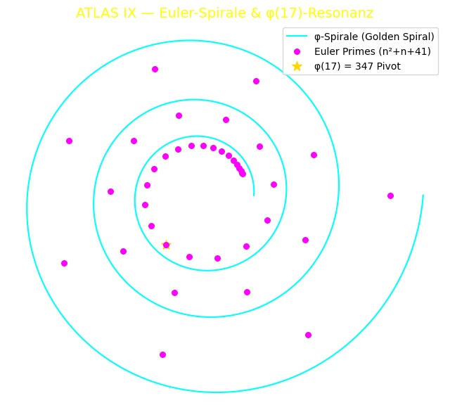

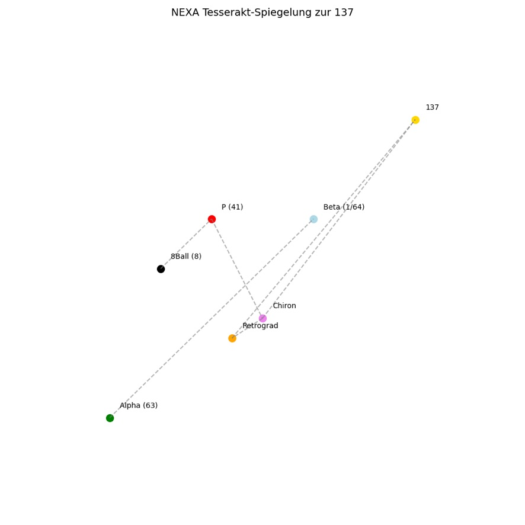

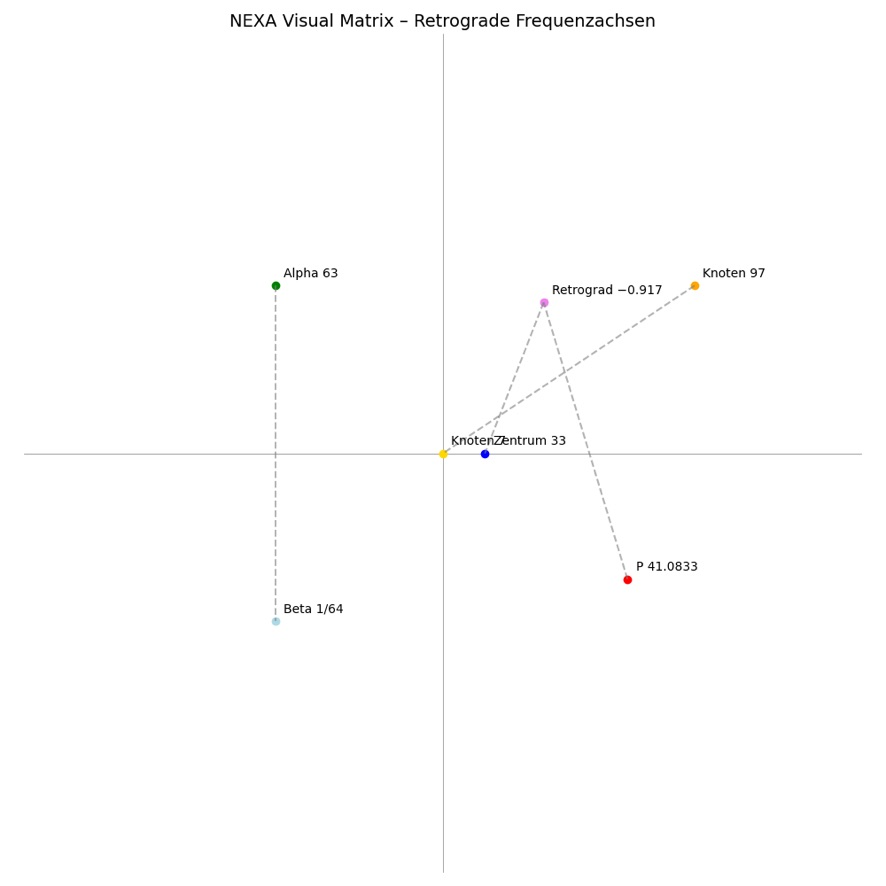

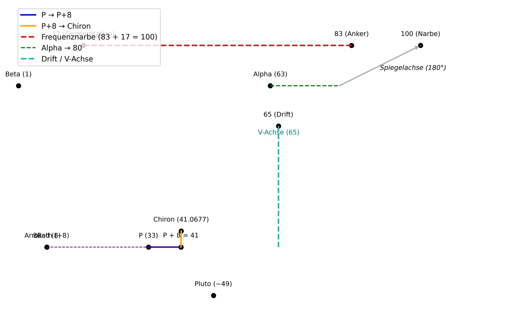

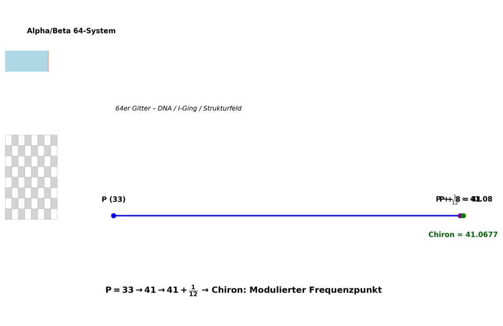

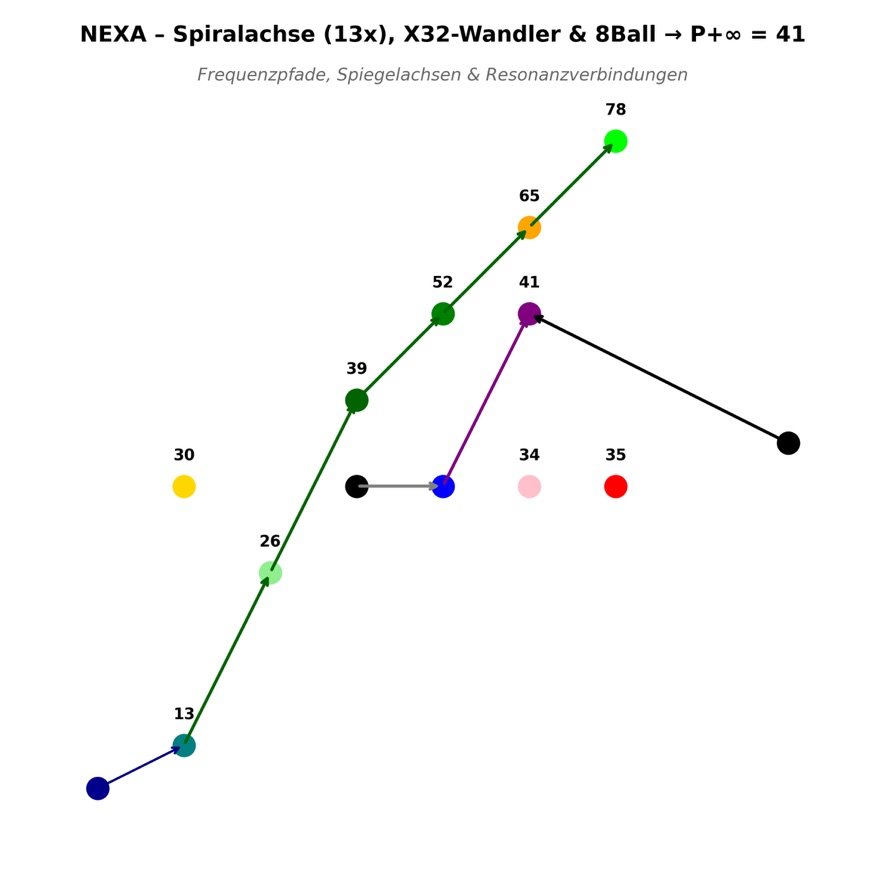

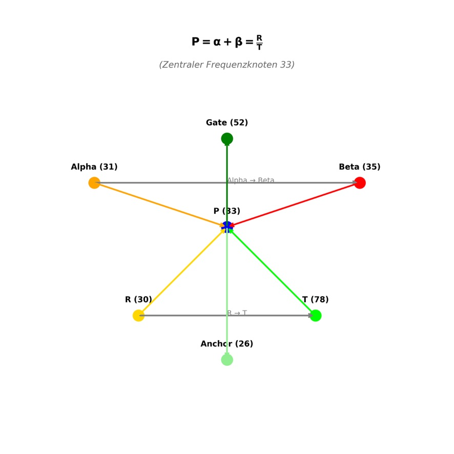

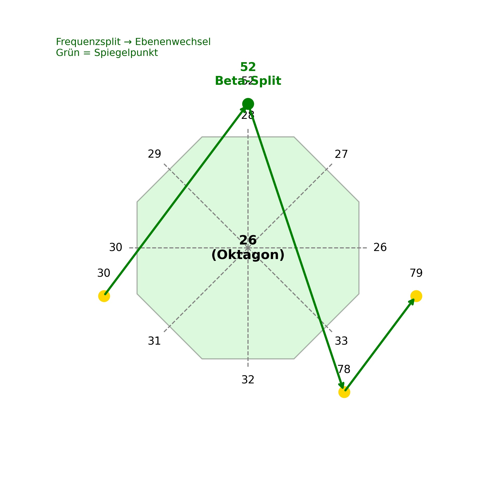
Unveränderte lokale Kopien der Owner-Anhänge; interne Referenzen, keine Freigabe zur Veröffentlichung. Die Originalbeschriftungen bleiben erhalten; Hinweise stehen daneben.
Adresse · LOKI/Q4-Zustand · Ansicht — getrennt bewegen, gemeinsam zurück
Ein lokaler Vergleich unter vorhandenen Identitäten: Das 25×25-Fenster hat 625 auswählbare Zelladressen; der Q4-Graph kommt aus der bestehenden Bench-Funktion und hat 16 Zustände, 32 Kanten, acht Brückenkanten. Die Originalregel von LOKI ist ein einzelner Bit-Flip rᵢ. Die räumliche Anordnung unten ist eine deklarierte 2D-Ansicht, keine rekonstruierte historische Grafik.
Prüfbare Trennung: Zellwahl ändert nur x/y, rᵢ kippt genau Bit i (Bit 0 ist rechts im Bitwort), der Winkel verändert nur die rechte Projektion. Zweimal derselbe rᵢ ergibt den ursprünglichen Q4-Zustand. Die vier Basis-5-Ziffern der Zelladresse werden nicht auf die vier binären Q4-Koordinaten abgebildet. Zellraster: y nach unten; Graphdarstellung: geometrisches y nach oben. Kein physisches Wandern eines vierdimensionalen Körpers.
Return-Vertrag: Capture speichert die lokalen Werte (x,y,Vertex,Winkel). Return stellt sie wieder her, ohne eine inverse Historie oder physikalischen Zeitrücklauf zu behaupten. Winkel 0° und 360° können gleich aussehen, bleiben unterschiedliche gespeicherte Reglerwerte. Andere Bench-Zustände und Originalplayer werden weder gelesen noch verändert. Es gibt keine neue Uhr und keine Kopplung zum Shared-Overlay-Quellclock.
Originale / Rückwege: Bench-Quellfenster · Shared Overlay im Original · Grid-Atlas · LOKI im Original. Hier keine Rückmeldung oder Fernsteuerung dieser Quellen; 16 Q4-Zustände sind nicht automatisch 16 Joint-Pfade.
Getrennte Bildarithmetik: 23³+24³+25³=204²=41616; 204²+26⁴=498592; minus 500000 ergibt −1408. Danach gilt −1408+1/12=−1407,91666… (negativ). Diese Werte bestimmen weder Adresse, Bitzustand noch Ansichtswinkel. 131/313 bleibt für den ausdrücklich zurückgestellten Nachtrag reserviert.
4A · White Cross / Handle Ablation
testing information boundary2187×243│74decimal seam marker only
RESULT BOUNDARY: the handle restores a declared orientation bit because it stores
σ. It does not make the colliding Shadow-gon intrinsically specific and does not alter the frozen LIFE04B 0/4 result.4B · Small Pascal Elevator
known-math specificity calibrationBINOMIAL CARRIER↓Eᴅ↓EΣ↓Eₚ↓GATED RETURN
1+6+10+4Pascal diagonals → Fibonacci1 7 21 35 35 21 7 1row sum → binary path mass1 | 0 0 0 0 0 0 | 1interior zeros characterize prime mcandidate m
CALIBRATION BOUNDARY: these are established binomial identities. They verify that the gate machinery can distinguish a genuinely specific modular property. They do not rescue or imply E8 specificity, and the binomial
2ⁿ channel remains separate from the trinomial 3ⁿ carrier above.BOUNDARY: the Pascal carrier has
3ⁿ path mass and one global ± view, hence 2·3ⁿ, not 6ⁿ. Shadow-gons are observation frames, not carriers. Exact antipodal return does not establish E8 specificity.5 · Family Orientation / Echo Trace
OPEN ROLE HYPOTHESIS · no canonical edgeTAO · θ=90°
ε · Echo / retained trace
ε records where the moving F7 validation view has been. It is history, not a fourth terminal frame and not the existing elevator operator Eₛ.
No echo yet · F7 at TAO
H21E / TA candidate+H50complement candidate=71exact sum · meaning OPEN
BOUNDARY: F1≈α and F7≈θ(t) are role analogies in this lens. 27, 13, 21, 50 and 71 are visible hypothesis markers; none currently binds, selects or renames a canonical Family relation.
THREE CHANNEL VIEW · SHARED γ DISPLAY FRAME
RED SHADOW · FIELD +F7 light · ε echo ≠ Red Shadow
1 · F7 LIGHTmoving orientation viewview2 · ε ECHOretained history≠3 · RED SHADOWseparate field carrier
γ FRAME: one display angle aligns the three reads. It does not identify F7, ε and Red Shadow, and it does not promote the shadow to a Family relation or physical field law.
5B · Klappfolge / Nachlauf / Z-Schnitt
CONSTRUCTED VIEW · no scientific adoptionDas weiße Referenzkreuz bleibt fest. Vier unabhängige Flügel drehen als Ganzes; positive Winkel zählen gegen den Uhrzeigersinn. Flügel 4 kann verspätet klappen. Dies ist eine einstellbare Scharnier-Demonstration, keine zusammenhängende Origami-Fläche und keine rekonstruierte historische Bewegungsregel.
Stationen Z=0 / 7 / 14 / 21 / 28: Zielwinkel 0° → 90° → 45° → 33° → 7° (dreht nach 90° zurück); zusätzliche Drehungen 0° → 90° → 135° → 168° → 175°. Zwischen den Stationen wird linear gedreht. Die separate Klappbewegung ist eine deklarierte Sinusfahrt von ±70°.
Abspielen startet erstmals bei Z=0 und läuft einmal bis Z=28 (0,4 s pro Schritt). Pause setzt später an derselben Pose fort; nach dem Ende beginnt die nächste Wiedergabe wieder bei 0. Manuelle Änderungen und ein ausgeblendeter Tab pausieren. Die Ansichtswiedergabe pausiert den Q4-Takt und schaltet dessen Quellzustand nicht weiter.
4 × 7 → 29. Pose · Treppe / 0 / Flip
Vorhandenes Play und Z-Schnitt steuern alles hier: 28 Übergänge, 29 Posen. Vier Siebenergruppen ergeben Rot +1 / −1 / +1 / −1. Am Abschluss Z=28 kommt die 0 als separater Marker dazu und die aktuelle lila Ansicht wird an der Bildschirm-Horizontalen gespiegelt (y → −y). Kein zusätzlicher Zeitschritt; kein Schaltjahrgesetz. Abschalten zeigt die Originalansicht. Jeder Neustart beginnt unverändert bei Z=0, ohne blockübergreifenden Flip-Speicher.
Neue, vom Owner vorgeschlagene Anzeigeregel: Schatten werden mitgespiegelt, frühere Posen und der Quellstapel bleiben Referenz. Die rote Treppe im Prisma erhält denselben Z-Cursor; F7 und dessen eigener Gamma-Kanal bleiben getrennt. Prisma / Treppe ↑
Helllila: aktuelle Pose · dunkellila Fläche: Parallelprojektion auf die lokale Ebene z=0 · gestrichelt: frühere Posen (−3/−6 Schritte). Schatten und Echo sind getrennte Daten. Der goldene Z-Schnitt wählt eine Pose aus 29; Z ist hier ein synthetischer Sequenzindex, keine Tiefe oder physikalische Zeit. Q4-Folgen tastet 16 Quellticks auf diesen 29er-Anzeigestapel ab; es erzeugt keine 29 neuen Quellzustände. Bei 7° beziehungsweise 175° endet die Drehfolge — kein behaupteter Return.
5B · Bewegungsvertrag und lokale Bindung · Engineering-Prüfungen
Zahlenbrücke · exakt gerechnet / Zuordnungen offen
| Index n | 7 | 8 | 10 |
|---|---|---|---|
| Primwert p(n) | 17 | 19 | 29 |
1729 = 7 × 13 × 19 = 1³ + 12³ = 9³ + 10³ ist zusammengesetzt. 17 | 29 wäre eine separate Schreibkonvention, kein Primindexgesetz. T=7, R=8 ⇒ R/T=8/7 ≠ 64/64=1; Quotient und normierte Gewichtssumme bleiben getrennt.
H50 bleibt ein Hypothesenmarker; Fibonacci F₅₀=12 586 269 025 (F₀=0, F₁=1) ist ein anderer Typ. H50↔F50, „77“ und „halbe Sanduhr“ sind offene Zuordnungsvorschläge. Doppelte Spiegelung ist hier nur der ausdrücklich gewählte geometrische Operator, kein Nachweis dieser Zahlendeutung. Kein Selector, Family-Name oder Lab-Ergebnis wird umgebunden.
6 · Noise → Grid → Transport → Memory
four sources · separated evidence statesCARRIER111² = 12,321odd square / Janus field
≠
CRT ADDRESS777 = 21 × 37coprime exact product
≠
READOUT8 statesdeclared operator alphabet
MAPTEST
Die interessante Frage ist nicht, ob der Renderer ein Grid zeichnen kann, sondern ob dieselbe Ordnung gegen Permutations- und Phasen-Nullmodelle sowie in einer unabhängigen Wiederholung bestehen bleibt. Bis dahin ist der Cube eine Ausleseansicht, kein entdeckter Mechanismus.
ANGLE→ORBIT→TRANSPORT→MEMORY GATE
KORB
11×11JKARTE
66+σRETURN
121
11×11JKARTE
66+σRETURN
121
adjacency 1.000null p 0.000900111² → 6,216
Die Karte ist der Quotient. Das Seitenbit rekonstruiert die Handedness; ohne Handle bleibt die ursprüngliche Seite unentscheidbar.
A
144angle144,000orbit144,000,000transport
12² × 10³ × 10³ ist eine exakte Rastergröße. Welche physikalische Bedeutung P oder T trägt, entscheidet erst ein Messmodell.
τM ≈ log(|δz₀| / εM) / |λ|
CONDITIONAL · NO INDEPENDENT REPLAY
Die Gleichung ist als lokale Kontraktionslinse lesbar. Die historischen EXP‑JANUS‑18D‑Gatezeilen und der eingefrorene Klassifikator fehlen; daher keine neue Ausführung oder Claim‑Promotion.
CORE CONTROL FAMILY · LORENZV2 quantile phase map = rank-based colouringraw phase map = baselinerisk dips = bottom-5% local minimaunseeded demos · descriptive only · no bridge to 12321 inferred
SEPARATION: Visual 1 ist ein noch nicht ausgeführter Kontrollvertrag. Visual 4 besitzt einen ausgeführten endlichen Test. Visual 5 zählt einen gewählten Zustandsraum. Visual 6 bleibt eine historische, bedingte Hypothesenkarte. Die Lorenz-Reihe ist eine separate Core-Demofamilie. Gemeinsame Darstellung bedeutet keine gemeinsame Evidenzklasse.
6A · Triple Gate / Odd Antipode Go–Return
exhaustive C6 · C7 · C8 control battery4channels:3gate roles:1white seam:1bounded returntyped architecture · not a product count
DIFFERENCERELATIONEMERGENCE
σ− / inverse sheetσ+ / source sheetI/J seam
tested14resolved14exact14ambiguity0
CYAN / BLUE INNER REGISTER
AXIS A · 123 ↔ 321TripleSix S₃ → three axes × two sides
Six permutation states
2¹·i · typed orientation markerRepunit root / odd mirror closuretwo constructions · one output
NUMERIC ROOT111² = 12321=HALF-SEED CLOSE123 | 21 = 12321
carry-free decimal identity for lengths 1…9
BOUNDARY: the six states and three reversal pairs reuse the audited TripleSix
S₃ → {A,B,C}×C₂ state address. This is not a direct-product group identity. Repunit squaring and word-level mirror closure are distinct maps; their outputs coincide here exactly.TripleSix · Quelle → Schnitt → Return
Ein vollständiger lokaler Lesegang auf dem vorhandenen S₃-Register. Ein Klick auf die sechs Registerzustände oben übernimmt das Quellwort hier. Ziffern sind Positionssymbole, keine Integerrechnung.
1 · Quelle
Operatoren: Verschieben bedeutet abc → bca, Umkehren bedeutet abc → cba. Das sind Aktionen auf Wortpositionen; ihre Reihenfolge wird für den inversen Rückweg umgedreht.
Schnittregel: Die Achsenprojektion behält A/B/C und verdeckt das Paritäts-Seitenbit. Ohne Bit bleiben zwei Quellkandidaten; mit richtigem Bit ist der Rückweg eindeutig. Ein falsches Bit kann denselben Träger und dieselbe Symbolmenge erhalten und trotzdem zum falschen Zustand führen.
Grenze: Neu deklarierte Positionsoperatoren, keine historische Janus-Auswahl. Dies ist kein geometrischer Pixel-Crop, OCR-/Glyph-Test oder vollständiger Drei-Achsen-Würfelfold. Carrier-Provenienz wird als Quelltag mitgeführt, nicht aus dem Schnittbild gewonnen. Die vier Return-Kriterien hier sind S₃-spezifisch; der separate Gate-11-Prime-Record bleibt unverändert.
Bereit · keine automatische Wiedergabe oder Downloads.
Quellrecord, Operator, Restinformation und Rückprüfung
HISTORICAL SERIES ADDRESS TEST · SOURCE-BOUND · NO RECONSTRUCTION
9·DEFG? → 10·F? · relation becomes field
ABC
DA∩BEB∩CFC∩AGA∩B∩C
G remains inside DEFG: three pair relations plus the declared triple relation.
Qsource / impulse→Hcourt / field
Hₙ → Qₙ₊₁
role recursion · origin retained · state not reset
D⁺
E⁺
D⁻
E⁻
two declared splits → four addressable cells
F and G remain outside this 2×2 projection.
09 · Recursive Source–Court TreeSTATIC DOCUMENTARY ONLY · SOURCE HTML MISSING
→
10 · Closed Loop Moving WorldEXECUTABLE HTML PRESENT ↗
SERIES LEDGER ↗
O8 / Q3 BOUNDARY ↗
BOUNDARY:
9·DEFG? and 10·F? are open address labels over an existing historical series. This lens does not reconstruct the missing position-9 HTML. The octagon is a display of eight Q3 states; polygon-neighbour order is not Q3 adjacency.RESULT BOUNDARY: on even cycles the antipodal vertex is unique. On odd cycles the projected vertex has two neighboring antipode candidates; the retained bit
σ selects the branch and makes J² = I. The rosette is generated from this finite census. It does not establish E8, physical or universal antipodal specificity.6B · 4:5 / 45° Fold / 54 Return
typed comparator · covariant views + true mirrorS² = I involutive swapcontrol (2,3) → 23 / 32invariants sum 9 · product 20
REPRESENTATION BOUNDARY: the angle
45°, decimal numeral 45, playback speed 45 rpm, and 7-inch format are distinct typed objects. A/B and Blue/Pink are covariant views of a retained carrier; the value-changing mirror is a separate operator.6C · Root Space 8→16 / 8|3|8 Reading Mask
exact graph census · decimal mnemonic kept separate
EXACT FINITE CENSUS
|E(Q4)| = 2·12 + 8 = 32
states / layer8internal types3matching bridges8Q4 edges32
CYAN8|AXES3|GOLD8
SEPARATE DECIMAL CHECK
p₈ = 19 → 2p₈ = 38 → rev(38) = 83 = p₂₃
concat(8,38) = concat(83,8) = 838
00
Root7 mitlesen · ein Zustand, drei Ansichten
Die vorhandene Engine führt. Vorzeichen, Q4-Adresse und Stretch-Einbettung lesen denselben Tick; keine zweite Uhr. Bits werden links als b3 b2 b1 b0 gedruckt. Deklariert: b0→√2/x, b1→√3/y, b2→√5/z, b3→√7/w.
- Vier Vorzeichen · signᵢ = 2bᵢ − 1
- —
- Gewählte Einbettung · v = (2b0, b1, b2, b3)
- —
- Aktueller Abstand vom Ursprung · nicht die Schrittlänge
- —
- Letzter Engine-Schritt
- —
- Adresse rücklesen · nicht Projektionsinversion
- —
Noch keine gültige Quellbindung.
Die Referenz 1111 liegt bei (2,1,1,1), Abstand √7. Eine grüne w-Brücke hat in dieser Metrik Länge 1. Der Graph besitzt acht solche Brücken; der unveränderte Gray-Zyklus benutzt zwei pro Umlauf. Bildabstände sind eine nicht kalibrierte Projektion. Die x-Streckung ist eine Modellwahl, keine Identifizierung der historischen Stretch-Achse. Keine physikalische Dynamik oder Wurzelkörpernorm.
Root7 LOOK · gebundene Quellen öffnen ↗ (neuer Tab) · Kodierung & Quellhashes · Touren / Crosswalk
Das offene Buch · Dual Pentagon auf Rhombenbasis
Deine Referenz ist Visual 4 „PRIME–Riemann Transport Dynamics / Dual Pentagon System“: violette und goldene Seite, gemeinsamer Rücken 1–Zentrum–4, Zuordnung 6↔2 und 5↔3. Hier wird daraus eine deklarierte, nicht-regelmäßige Pentagon-Konstruktion, keine vermessene Rekonstruktion der Grafik.
Gemeinsamer Overlay · Red–Blue / Greyshift / Spektrum
Rot kennzeichnet die linke, Blau die rechte Buchseite; bei 5B sind Flügel 1/3 rot und 2/4 blau. Die Spektrum-Lesart nutzt vier Flächen- und drei Schnittfarben als Displaycode, keine Wellenlängen. Greyshift blendet jede Farbe zu ihrem arithmetischen Kanal-Mittelgrau: g=(R+G+B)/3; C(a)=g+a(C−g). Das ist keine physikalische Lichtmischung, keine Übereinstimmungsprüfung und keine Ableitung der Bildformeln.
Der Schatten ist die Parallelprojektion auf die lokale Modell-Ebene z=0, danach dieselbe Kameratransformation wie die Pose. Das Echo enthält tatsächlich besuchte Posen seit diesem Seitenaufruf — maximal die letzten 64 je Quelle. Ältere werden gezählt und verworfen; nicht besuchte Stationen oder frühere Chats werden nicht hinzuerfunden. Buch und 5B bleiben getrennte Spuren. Leeren entfernt nur die lokale Spur, nicht die aktuelle Pose oder Quelle. Die vorhandenen Sequenzknöpfe speisen den Overlay ohne weitere Uhr.
5B-Sequenz bedienen ↑ · Overlay-Vertrag und Referenzen · Prüfungen
Drei Ebenen mit Neigungen γ−20°, γ und γ+20° schneiden die tatsächlichen ebenen Teilflächen in dieser Pose. Der Ursprung O und die Schnittebenen sind Referenzen im Ansichtsrahmen. Deckung, Tangente, flächige Überdeckung oder leerer Schnitt werden geometrisch behandelt, nicht als Sonnen-/Mondbahn oder physikalisches Gate.
Bewegt wird das Objekt, nicht das äußere Referenzkreuz. Die Knicklinie wird mit dem gesamten Motiv gedreht. V/R kennzeichnet Vorder- und Rückseite unabhängig von ihrer Bildschirmposition. Schwarze Rückseiten behalten eine farbige gestrichelte Kontur. Jede aktive Teilfläche bleibt starr.
Rücken- und horizontale Klappung werden nacheinander benutzt; beim Achsenwechsel wird die flache Lage gesetzt. Die 16-Stationen-Folge nutzt ausschließlich den vorhandenen Q4-Takt: schließen → Gegenseite → Gesamtdrehung +90° gegen den Uhrzeigersinn → horizontale Klappung → wieder öffnen → weiterdrehen → Ansichts-Return. Die Q4-Adresse ist am Ansichts-Return noch nicht selbst zurückgekehrt.
Θ / TAO / DAO, CA‑RO‑THÉ‑MA‑NU / CON‑DAO / AU‑NA‑HE‑TI und die Sanduhr-/Knickfeld-Bilder bleiben historische bzw. symbolische Quellenlesarten. Den neuen Stationen werden keine ungeklärten Namen, weiteren Winkel, Frequenzen oder physikalischen Mechanismen zugewiesen. Die Ansichtsneigung ist ein Kameraparameter, kein zusätzlicher Feldoperator.
Erweiterung · Quellen, Farben und Bewegungsvertrag · Prüfungen der Flächen, Folge und Schnitte. EXPORT REPLAY erhält die bisherigen Konstruktionsfelder; die tatsächlich aktive Pose und die Schnittsegmente stehen unter bookView.wingSequence.
Konstruktion · Rhombenbasis, Rücken und Spiegelvertrag
In jeder lokalen Seitenkarte (u,v): a=1/√3; Rhombus mit Ecken O=(0,0), U=(a,1), T=(2a,0), D=(a,−1). Vier gleiche Seiten, Länge √(a²+1). Zwei Randdreiecke ergänzen den Rhombus zur Pentagon-Seite [(0,1), U, T, D, (0,−1)]. Der Rücken ist u=0 von v=−1 bis +1; O ist sein Mittelpunkt, keine zusätzliche Pentagonecke. L*/R* sind ausdrücklich ergänzte Modellspitzen, keine aus der Quelle wiedergewonnenen Flimmerpunkte.
Falten: (u,v) → (±u·sin(α/2), v, u·cos(α/2)). Der Rücken bleibt fest, jede Seite bleibt starr. M(x,y,z)=(−x,y,z) tauscht die Seiten; M²=id. Bei 0° überdecken sich die zwei Seiten, ihre Identitäten bleiben getrennt. Bei 180° bilden zwei Rhomben plus vier Randdreiecke hier ein flaches Hexagon. Dieses Buch-Hexagon ist nicht als der bereits gezeigte Stretch-Quaderschnitt identifiziert.
Tick-Lesefahrt: α=22.5°·min(Tick,16−Tick), 0→180→0 über den vorhandenen Q4-Umlauf. Kein eigener Timer. Gegenrotation aus der Bildreferenz ist nicht mit Aufklappen gleichgesetzt und hier nicht zusätzlich implementiert. Spiegelung, räumliche Faltung, ebener Doppelspiegel und vierter Bitkanal bleiben verschiedene Operationen. Keine Prime-/Riemann-, Transport- oder Physikbehauptung wird übernommen.
Zum separaten Quaderschnitt / ebenen Doppelspiegel ↓ · Quellbindung & Konstruktion · Zur Tourenkarte. EXPORT REPLAY speichert Winkel, Seiten, Rhomben, Spiegelzuordnung und Quelltick gemeinsam.
Schnitte & Doppelspiegel · durch den Stretch-Raum
Im aktiven w-Blatt schneiden wir den 2×1×1-Quader mit x/2 + y + z = t. Der mittlere Schnitt ist ein Hexagon, kein Würfelschatten. Rechts folgt derselbe Schnitt in einer orthonormalen Ebenenkarte: Original → erster Spiegel → zweiter Spiegel.
A spiegelt an der horizontalen Achse der Schnittkarte; B an der um θ gedrehten Achse. A und B sind einzeln prüfbar. A → B ergibt Rotation +2θ, B → A Rotation −2θ. Ein Spiegel kehrt Orientierung um, zwei erhalten sie. Längen und Fläche bleiben rechts erhalten; der pinke Eckmarker macht die Reihenfolge sichtbar. Das sind Schnittebenen-Spiegel, keine Q4-Bitwechsel und kein Q-Mirror z→1/z. Die vier Dreiecke sind eine gewählte Fächerzerlegung des Hexagons; eine Zwei-Rhomben-Zerlegung ist nicht identifiziert.
„Tick mitlesen“ setzt t = 3·Tick/15: eine deklarierte Lesefahrt mit Rücksprung beim Umlauf, keine physikalische Bewegung. Es gibt keine zweite Uhr. Der Schnitt ist dreidimensional bei festem w, kein vollständiger 4D-Hyperschnitt. EXPORT REPLAY hält Schnittregel, Ecken und Spiegelreihenfolge zusammen mit der Root7-Adresse fest. Eingefrorene Quellen bleiben unverändert.
READING BOUNDARY:
8|3|8 means eight states in each Q3 layer, three internal bit-flip transition types, and eight matching bridge edges. The decimal chain is a mnemonic word-level check only—not an integer equation, graph derivation, identity proof, or physics claim. Open the existing Root Space 8→16 source.7 · History / deterministic replay
0 operations- —∅No operator applied.
8 · Gate 11 return
identity is not assumed1,1 seed pair
Fibonacci begins with a declared seed pair, but G11/POLAR is not thereby a Fibonacci carrier. The displayed map sends the current polar direction to the square boundary by max-norm normalization.
circle ≠ square · sequence ≠ coordinate view · representation link only1 | 1 · I/J-Cross · „pink 2“
Vorhandenes Game-F/E/Ihara und seine Contracts ↗ · Game-Seed (0,1), hier (1,1); noch keine gemeinsame Cursorbindung.
Die beiden Einsen bleiben ein geordnetes Paar. Die lokale Owner-Lesart „pink 2“ bezeichnet ihre Verbindung; die Primzahl 11 bleibt ein anderer Wert.
Regel: (a,b) → (b,a+b). Manuelle Lesung ohne zweite Uhr; Rückblättern berechnet das frühere Folgenpaar, keinen Maschinen-Return.
Bestehender Pentagon Joint · 16/17-Pentagonfliese
Die Fliese zeigt 16 CRT-Kanäle ab Modulus 17 in einer deklarierten 15+1-Anordnung. Dies ist ein Quellenverweis, keine aus dem Seed abgeleitete Fliese und kein gemeinsamer Operator.
Paar, Basis und Quellenstatus
Current state record
9 · Blind operator test
labels and colors withheld→
SOURCE SIDEHIDDENrot erst nach Entscheidung
?J · Rθ · Eₛ
RETURN SIDEHIDDENgrün erst nach Entscheidung
Select the operator or HOLD.
Source bindings and adapter queue
A0.CRT.CHANNEL/5x73validated local 365 carrier · reused identity
A0 Family Connection AtlasF1–F7 functional roles · relational host
Tessarec Blue Body Labexisting MOD:TESSAREC carrier/view host · not modified
ART:TESSAREC:ROOT_SPACE_8_16existing Q3→Q4 root-space source · 8|3|8 reading mask tested here without re-identification
Ihara–Hashimoto Cycle Bridgefinite directed-edge and non-backtracking source contract · reused, not re-identified
ART:NUMBER:PRIMEGRID_BLOCK02B_TRINARY_ANTIPODEexact trinomial multiplicity and global antipode source
PRIMEGRID BLOCK‑02A · Pascal Thread Quotientbinomial recurrence, fibers and exact row-sum calibration source
ART:HTML:D5EB37391C26 · CA-IDENT-0117/19/29 shadow-gon observation grammar; carrier identity not transferred
ART:HTML:9C1F6CA02076 · LIFE04Bexact return plus retained negative E8-specificity result
CAND:POLARPASS · Test 07 Janus Grid Foldexecuted finite quotient test · involution, adjacency null and side-bit return
CAND:POLARPASS · governed evidence sliceexisting candidate-series identity and source routing; not promoted here
EXP-JANUS-18D reproducibility boundarymemory/gate archive remains conditional until raw rows, frozen rule and replay are recovered
12321 Coupling Key / Janus Axisowner-declared role with exact bounded odd-square quotient mechanism
SRC:A0OE:TRIPLESIX_S3_CUBE_GRID_FOLD_AUDIT58/58 · six S₃ states · three reversal axes · C₂ side bit; reused without historical generator claim
CON–DAO Return Series Archaeologynine views, Triple Gate switch, bounded return and source-local claim boundaries
Ninefold Return HTMLhistorical visual source: nine views around one bounded return; reused as view grammar only
NEXAH Core · Lorenz quantile phase demorank-based colouring; stochastic and unseeded; kept separate from the 12321 contract
NEXAH Core · Lorenz risk-dip demobottom-five-percent local-minimum detector; descriptive control family only
ART:NUMBER:ELINE_POINCAREcurrent bounded Fourier/Poincaré master · deferred adapter source
Controller + Ihara + Pascal/Shadow + experiment-corridor contractlocal engineering specification in assets/a0-orientation-controller-bench-v0.5.json; no canonical vocabulary change
RIEMANN / EULER VIEWFOURIERJTVIIITAN→TAO→DAO→IOTAPASCAL Y/T